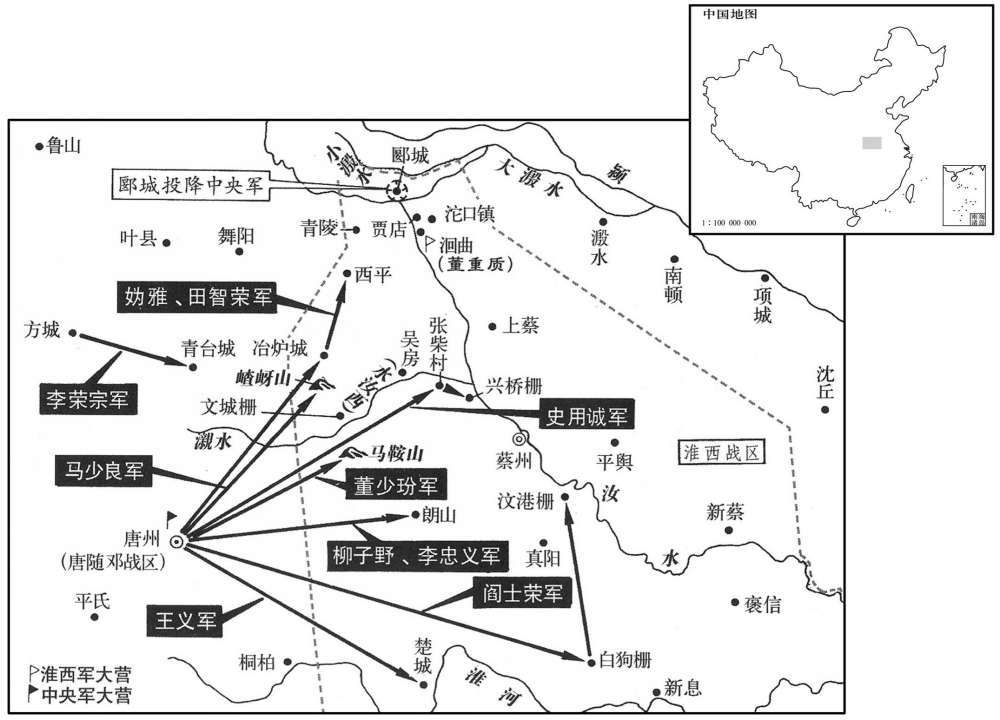
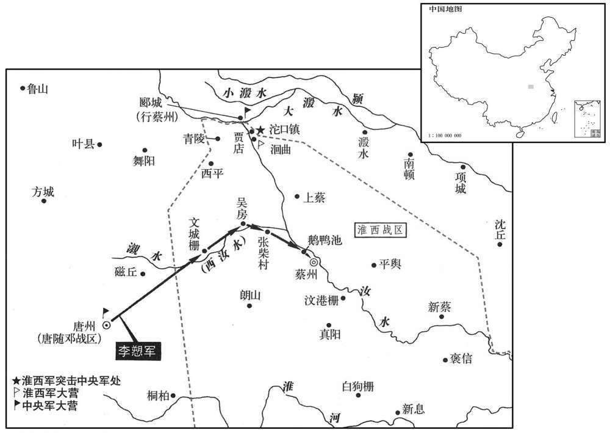

卷次与人物目录 / 卷240
资治通鉴 · 卷第二百四十【唐纪五十六】
公元817年至公元819年 · 原文、白话与胡三省注
本页按胡注本编排保存全卷内容。白话采用本站所据译本，未可靠对应的内容另列说明；事件标题用于定位，并非原书文字。
本卷共117段原文，113段有译文对应，4段缺译或待核对。
卷第二百四十【唐纪五十六】起强圉作噩（丁酉），尽暑维大渊献（己亥）正月，凡二年有奇。
卷首原文与注释
宪宗昭文章武大圣至神孝皇帝中之下
公元817年 · 唐宪宗昭文章武大圣至神孝皇帝元和十二年
元和十二年〔（丁酉、八一七）〕
上传原文的注释括号有异常，字符原样保留；无法可靠划分的段落默认全文显示。
本年事件索引（现代整理）
- 宪宗贬袁滋为抚州刺史
- 李愬到唐州后安抚军士并表示不以战攻为任
- 李愬亲自探视伤病士卒以示懦怯诱敌
- 朝廷派遣盐铁副使
- 回鹘再请尚公主，朝廷遣使说明暂缓和亲
- 李愬请增兵并擒获淮西骁将丁士良
- 淮西行营奏克蔡州古葛伯城
- 丁士良建议先擒陈光洽，随后将其生擒
- 李道古攻申州失利，伤亡甚众
- 淮西民众饥困归附官军，朝廷设行县安置
- 李愬自唐州移军宜阳栅
- 郗士美在柏乡战败撤军
- 宪宗赐程执恭名程权
- 王承宗遣兵入东光断桥，程权退保沧州
- 吴秀琳以文城栅降李愬
- 王沛率军渡冢水，李光颜在郾城击败淮西兵
- 李愬派兵攻取马鞍山、岈山等栅
- 董昌龄与邓怀金献郾城归降李光颜
- 李愬部将攻取冶炉城等淮西据点
- 李愬派柳子野、李忠义袭取朗山
- 宪宗罢河北行营诸军，集中力量讨伐淮西
- 李愬部将李荣宗攻取青喜城
- 李愬擒获淮西骑将李祐并以礼相待
- 李愬重用李祐谋划袭取蔡州
- 李愬废除窝藏敌方间谍者灭族的旧军令
- 程异从江淮运回军费一百八十五万缗
- 宪宗罢免韦绶太子侍读并外任虔州刺史
- 吴元济上表谢罪请归降，受董重质等阻挠未能成行
- 大水泛滥，平地水深二丈
- 孔戣因奏罢明州贡蚶蛤淡菜而获任岭南节度使
- 裴度请亲赴淮西督战，宪宗任其为宣慰招讨处置使
- 宪宗亲至通化门为赴淮西的裴度送行
- 裴度罢令狐楚中书舍人以防其阻挠军事
- 李光颜、乌重胤在贾店败于淮西兵
- 裴度抵达郾城并撤去监军干预，使诸将得专军事
- 淮西兵袭冢水镇并杀三将
- 宪宗罢免李逢吉外任东川节度使
- 李愬攻取吴房外城并击退追兵
- 李祐建议直取蔡州，裴度赞同出奇制胜
- 宪宗仍任张宿为谏议大夫
- 董重质率兵袭击沱口，裴度险遭淮西兵截杀
- 李愬夜袭张柴村后进军蔡州
- 李愬军夜入蔡州，吴元济得知城陷后登牙城拒战
- 董重质率精兵驻守洄曲，李愬招降董重质
- 李愬攻破蔡州牙城，吴元济请罪被擒
- 李愬擒获吴元济后不杀其部属
- 宪宗任李墉为同平章事
- 淮西行营奏获吴元济，宪宗拒绝派人搜取珍宝
- 董重质降后李光颜收降其部众，裴度入蔡受李愬迎拜
- 李愬还军文城并解释用兵取胜的谋略
- 裴度安抚蔡州百姓，废除吴氏苛法
- 宪宗命韩弘、裴度列报平蔡将士功绩并抚恤军民
- 宪宗在兴安门受俘，吴元济献于庙社后斩首
- 淮西百姓长期受吴氏威虐，战事结束后始知朝廷
- 李师道派刘晏平赴蔡探听形势，后将其杖杀
- 宪宗任李愬为山南东道节度使并封凉国公
- 宦官接任馆驿使，左补阙潾上疏谏止
- 恩王李连薨
- 宪宗任李祐为神武将军
- 裴度任马总为彰义留后并与梁守谦入蔡处置降将
- 宪宗封裴度晋国公并命其入朝知政事
- 李墉称病辞相未入朝
- 宪宗将董重质贬为春州司户
春，正月，甲申，贬哀滋为抚州刺史。
春季，正月，甲申（二十四日），宪宗将袁滋贬为抚州刺史。
李愬至唐州，军中承丧败之余，〔丧，息浪翻。严绶慈丘之败，山南东道未分为二帅也。既分为二帅，而高霞寓败于铁城，袁滋代之又败。〕士卒皆惮战，愬知之，有出迓者，愬谓之曰：「天子知愬柔懦，能忍耻，故使来拊循尔曹。至于战攻进取，非吾事也。」众信而安之。
李来到唐州。唐州的军队在经受死丧败亡后，将士们都害怕作战，李也知道这种状况。有些人出来迎接李，李便对他们说：“天子知道我柔弱怯懦，能够忍受耻辱，因此让我来抚慰你们。至于采取军事行动，就不是我的事情了。”大家相信了他的话，都放心了。
愬亲行视士卒，〔行，下孟翻。〕伤病者存恤之，不事威严。或以军政不肃为言，愬曰：「吾非不知也。哀尚书专以慭惠怀贼，贼易之，〔易，弋豉翻，轻易也。〕闻吾至，必增备，吾故示之以不肃。彼必以吾为懦而懈惰，然后可图也。」〔懈，古隘翻。〕淮西人自以尝败高、哀二帅，〔败，补迈翻。帅，所类翻。〕轻愬名位素微，遂不为备。〔为愬乘虚取蔡张本。考异曰：「愬沈勇长算，推诚待士，故能用其卑弱之势，出贼不意。居岁，知人可用，乃谋袭蔡，表请济师；诏以河中、鄜坊骑兵二千心益之。」郑澥平蔡录曰：「正月二十四日甲车，公至所部。先是，士卒经万胜、萧陂、铁城、新兴之败，人心皆惴恐，不敢言战。公佯曰，『战争非吾所能。』既而阴召大将计其事。是时，公以表请径袭元济，人皆笑其说，乃使观察判官王拟请师阙下，诏征义成、河中、鄜坊马步共二千以补其阙。」据此，则是始至便请益兵。又二月，即擒丁士良，降吴秀琳，是不待半岁然后知人可用，旧传恐误。然愬密谋袭蔡，岂可先泄之，而云「以表请袭元济，人皆笑其说，」则是人人知之，恐非也！今不取。〕
李亲自去看望将士们，慰问抚恤受伤和生病的人，不摆威严的架子。有人进言说军中政事不够整肃，李说：“我并不是不知道。袁尚书专门以恩惠安抚敌人，敌人轻视他。现在，敌人得知我来了，肯定要增设防备。我故意让敌人看到我军不够整肃，他们肯定以为我是懦弱而又懒惰的，此后才能够设法对付他们。”淮西人自认为曾经打败过高霞寓和袁滋的两个主帅，因李的名望与官位素来卑微而轻视他，便不再作防备。
遣盐铁副〔【章：甲十一行本「副」上有「转运」二字；乙士一行本同。使程异督财赋于江、淮。〕
本段缺少可靠对应白话，原文完整保留；未使用生成译文。
回鹘屡请尚公主，有司计其费近五百万缗，〔近，其靳翻。〕时中原方用兵，故上未之许。二月，计卯朔，遣回鹘摩尼僧等归国；〔摩尼来见二百三十七卷元年。史照曰：元和初，回鹘再朝献，始以摩尼至。摩尼至京师，岁往来西市，商贾颇与囊橐为奸，至是遣归国也。〕命宗正少卿李诚使回鹘谕意，以缓其期。
回鹘屡次求娶公主，有关部门计算所需费用将近五百万缗，而当时中原地区正在用兵打仗，所以宪宗没有答应回鹘的请求。二月，辛卯朔（初一），宪宗打发回鹘的摩尼教僧人等回国，命令宗正少卿李诚出使回鹘，晓示朝廷的用意，以便延缓通婚的日期。
李愬谋袭蔡州，表请益兵；诏以昭义、河中、鄜坊步骑二千给之。丁酉，愬遣十将马少良将十余骑巡逻，〔十将，军中小校也。逻，郎佐翻。〕遇吴元济捉生虞候丁士良，与战，擒之。士良，元济骁将，常为东边患；〔言唐、邓之东边也。〕众请刳其心，愬许之。既而召诘之，士良无惧色。愬曰：「真丈夫也！」命释其缚。士良乃自言：「本非淮西士，真元中隶安州，与吴氏战，为其所擒，自分死矣，分扶问翻。吴氏释我而用之，我因吴氏父子竭力。〔为，于伪翻。〕昨日力屈，复为公所擒，〔复，扶又翻。〕亦分死矣，今公又生之，请尽死以报德。」愬乃给其衣服器械，署为捉生将。
李策划袭击蔡州，上表请求增派兵力，宪宗颁诏将昭义、河中、坊的步、骑兵两千人拨给了他。丁酉（初七），李派遣十将马少良率骑兵十余人巡回侦察，遇到吴元济的捉生虞候丁士良，与他交战，将他擒获。丁士良是吴元济骁勇善战的将领，经常危害东部的唐州、邓州等地。大家请求将丁士良的心剜出来，李答应下来。不久，李把丁士良叫来，当面责问他，丁士良没有一点恐惧的神色。李说：“丁士良真是一位大丈夫！”他命令为丁士良松绑。于是，丁士良主动说：“我原来不是淮西的官吏，贞元年间我隶属安州，与吴氏作战，被吴氏擒获，自忖就要被处死了，吴氏却释放并起用了我。我因为吴氏而得以再次存活下来，所以我为吴氏父子尽力效命。昨天我力不能支，又被您所擒获，我也料想这次可要被处死了，现在您又让我存活下来。请让我竭尽死力，报答您的恩德。”于是，李将衣服和器具又给了他，任命他为捉生将。
己亥，淮西行营奏克蔡州古葛白城。〔汉书陈留宁陵县，孟康注曰：古葛伯国，今葛乡是。此必韩弘奏捷也。〕
己亥（初九），淮西行营奏称攻克了蔡州的古葛伯城。
丁士良这于李愬曰：「吴秀琳拥三千之众，据文城栅，在蔡州西南一百二十里。按续通典，栅在吴房县界。〕为贼左臂，官军不敢近者，〔近其靳翻。〕有陈光洽为之谋主也。光洽勇而轻，〔轻，牵正翻。〕好自出战，请为公先擒光洽，〔好，呼到翻。为，于伪翻；下同。〕则秀琳自降矣。」〔降，户江翻。〕戊申，士良擒光洽以归。
两版字句有差异，建议核对原文。
丁士良向李进言说：“吴秀琳拥有三千兵马，据有文城栅，犹如敌人的左臂。官军不敢靠近他的原由，就在于有陈光洽作他的主谋。陈光洽勇敢善战，但是不够稳重，喜欢亲自出来接战，请让我替您首先捉住陈光洽，吴秀琳自然就会投降了。”戊申（十八日），丁士良捉获了陈光洽，带着他回来了。
鄂岳观察使李道古引兵出穆陵关；〔黄州麻城县西北有穆陵关，在穆陵山上。〕甲寅，攻申州，克其外郭，进攻子城。城中守将夜出兵击之，道古之众惊乱，死者甚众。道古，皋之子也。〔曹成王皋，历江西、山南等镇，着功名。〕
鄂岳观察使李道古率领兵马由穆陵关进发，甲寅（二十四日），攻打申州，攻克了申州外围的城郭，又进军攻打内城。在城中守卫的将领夜间派兵进击李道古，李道古的兵马惊惶散乱，死者众多。李道古是李皋的儿子。
淮西被兵数年，〔被，皮义翻。〕竭仓廪以奉战士，民多无食，采菱芡鱼鳖鸟兽食之，亦尽，〔芡，巨险翻，今谓之鸡。〕相帅归官军者前后五千余户；〔帅，读曰率。〕贼亦患其耗粮食，不复禁。〔复，扶又翻。〕庚申，敕置行县以处之，〔未能得其县，故权置行县以处来归之民。处，昌吕翻。〕为择县令，使之抚养，并置兵以卫之。
淮西一连几年遭受战火，只得竭尽粮仓的储备来奉养参战的士兵。百姓多数没有食物，便去寻找菱角、芡实、鱼鳖、鸟兽来吃，但也吃光了。百姓聚在一起归附官军的先后有五千多户。吴无济也担心百姓要消耗粮食，便不再禁止他们归降官军。庚申（三十日），宪宗敕令设置行县来安顿淮西降附的百姓，为他们选择县令，让县令体恤并赡养百姓，还设置军队来保卫他们。
三月，乙丑，李愬自唐州徙屯宜阳栅。
三月，乙丑（初五），李由唐州移兵屯驻宜阳栅。
郗士美败于柏乡，拔营而归，士卒死者千馀人。
郗士美在柏乡战败，撤除营垒而回，死去的将士有一千多人。
戊辰，赐程执恭名权。
戊辰（初八），宪宗赐程执恭名为程权。
戊寅，王承宗遣兵二万入东光，断白桥路；〔东光县，属景州。未白曰：东光，汉旧县也。故城在县东二十里，齐天保七年移于今县东南三十里陶氏故城，隋开皇三年又移魏废勃海旧城。县西四里有永济渠，渠上有桥，当自县通弓高之路。白桥跨永济渠，在德州长河县。断，音短。〕程权不能御，以众归沧州。〔浑镐既败，郗士美又败，程权又退归，王承宗之才，非诸帅所能制也。〕
戊寅（十八日），王承宗派遣兵马两万人，开进东光县，切断了白桥的通路，程权不能够抵御，率领人马返回沧州。
吴秀琳以文城栅降于李愬。戊子，愬引兵至文城西五里，遣唐州刺史李进诚将甲士八千至城下，召秀琳，城中矢石如雨，众不得前。进诚还报：「贼伪降，未可信也。」愬曰：「此待我至耳。」即前至城下，秀琳束兵投身马足下；愬抚其背慰劳之，〔劳，力到翻。〕降其众三千人。秀琳将李宪有材勇，愬更其名曰忠义而用之，〔更，工衡翻。〕悉迁妇女于唐州。〔【章：甲士一行本「州」下有「入据其城」四字；乙十一行本同；退斋校同；张校同，云无注本亦无。】〕质其家于唐州，则文城之士心不敢怀反侧。〕于是唐、邓军气复振，人有欲战之志。贼中降者相继于道，随其所便而置之；闻有父母者，给粟帛遣之，曰：「汝曹皆王人，勿弃亲戚。」众皆感泣。〔自此以上李愬事。〕
吴秀琳率文城栅兵马向李投降。戊子（二十八日），李领兵来到文城西面五里处，派遣唐州刺史李进诚率领兵士八千人来到城下，召呼吴秀琳，城中箭石密集如雨，大家无法上前。李进诚回来报告说：“敌人是假装投降，是不能够相信的。”李说：“这是等候我前去哩。”李当即来到城下，吴秀琳收起兵器，一头伏在李的马前，李抚摩着他的脊背，好言安慰他，收降了吴秀琳的三千人马。吴秀琳的将领李宪既有才能，又很勇敢，李为他改名为李忠义，并且起用了他。李将文城各将领的女眷全部迁移到唐州。于是，唐州与邓州军中的士气又振作起来，人人都有准备打仗的决心。前来投降的敌军在道路上一个接着一个，李便根据他们的具体情况，一一做出安置。得知归降者家中有父母需要照料的，便发给粮食与布帛，打发他们回去，还说：“你们都是朝廷的百姓，不能丢下亲属不管。”大家都感动得哭起来。
官军与淮西兵夹冢水而军，诸军相顾望，无敢渡冢水者。陈许兵马使王沛先引兵五千渡冢水，据要地为城，于是河阳、宣武、河东、魏博等军相继皆渡，进逼郾城。丁亥，李光颜败淮西兵三万于郾城，〔按宋白续通典：郾城，在蔡州西平县北五十里。败，补迈翻。〕走其将张伯良，杀士卒什二三。〔自此以上攻郾城事。〕
官军与淮西军隔着水驻扎下来，官军的各支军队相互踌躇观望，没有哪支军队有胆量渡过水。陈许兵马使王沛率领兵马五千人率先渡过水，占领要害的地点筑城。于是，河阳、宣武、河东、魏博等军队都一个接着一个地渡过水，进逼郾城。丁亥（二十七日），李光颜在郾城打败淮西兵马三万人，赶走了该军将领张伯良，杀掉全军将士的十分之二三。

己丑，李愬遣山河十将董少玢等分兵攻诸栅；其日，少玢下马鞍山，拔路口栅。〔时都畿及唐、邓皆募土人之材勇者为兵以讨蔡，号为山河子弟，置十将以领之。玢，府巾翻。按唐、蔡交兵，凡境上要地，处处置守，所谓马鞍山、路口栅，固不可尽详其处而强为之注也。〕夏，四月，辛卯，山河十将马少良下(r)岈山，〔(r)，锄加翻。岈，虚加翻。〕擒淮西将柳子野。〔此以上又李愬事。〕
己丑（二十九日），李派遣山河十将董少玢等人分别出兵攻打各处栅垒。就在当天，董少玢占领马鞍山，攻克路口栅。夏季，四月，辛卯（初二），山河十将马少良占领岈山，擒获淮西将领柳子野。
吴元济以蔡人董昌龄为郾城令，质其母杨氏。〔质，音致。〕杨氏谓昌龄曰：「顺死贤于逆生，〔顺死，谓归顺而死。逆生，谓从逆而生。〕汝去逆而吾死，乃孝子也；从逆而吾生，是戮吾也。」会官军围青陵，绝郾城归路，〔青陵，在郾城西南。〕郾城守将邓怀金谋于昌龄，昌龄劝之归国。怀金乃请降于李光颜曰：「城人之父母妻子皆在蔡州，请公来攻城，吾举烽求救，救兵至，公逆击之，蔡兵必败，然后吾降，则父母妻子庶免矣。」光颜从之。乙未，昌龄、怀金举城降，光颜引兵入据之。吴颥济闻郾城不守，甚惧。时董重质将骡军守洄曲，〔据新书李光颜传：洄曲，实时曲，盖冢水于此回曲，因以为名。〕元济悉发亲近及私城卒诣重质以拒之。〔此以上又李光颜事。〕
吴元济任命蔡州人董昌龄为郾城县令，而将他的母亲杨氏当作人质。杨氏告诉董昌龄说：“顺承朝廷而死胜于叛逆朝廷而生。你摆脱叛逆，就是我死了，你也是我孝顺的儿子；你随从叛逆，就是我活着，也等于你杀死了我。”适值官军包围青陵，切断了郾城的退路，郾城守将邓怀金去找董昌龄商议，董昌龄便规劝他归顺朝廷。于是，邓怀金向李光颜请求投降说：“郾城将士的父母、妻子、儿女都住在蔡州，请您前来攻打郾城，我点燃烽火向蔡州请求援救，等援救的兵马来到郾城时，您便迎击他们，蔡州兵马必定失败。此后我再归降，郾城将士的父母、妻子、儿女大约便能够幸免于死了。”李光颜听从了他的主张。乙未（初六），董昌龄与邓怀金率领全城归降，李光颜带领兵马占领了郾城。吴元济得知郾城失守，非常恐惧。当时，董重质率领骡军在洄曲防守，吴元济将亲信将士以及守城士兵全部派往董重质处，以便抵御李光颜。
李愬山河十将妫雅、田智荣下冶炉城。〔妫，居为翻，姓也。九域志曰：蔡州冶炉城，韩国铸剑之地，时当在西平界。按新书，冶炉城在(r)岈山东。〕丙申，十将阎士荣白狗、汶港二栅。〔白狗、汶港二栅，皆在蔡州真阳县界。萧梁置西淮州于真杨白狗堆，后齐废州为济兴郡，寻废郡为白狗县，，陏开皇初改县日怀州，大业初省入真阳。隋志：真阳有汶水。〕癸卯，妫雅、田智荣破西平。〔西平，替秋柏国，汉为西平县，属汝南郡，唐属蔡州。九域志：在州西一白五里。〕丙午，游弈兵马使王义破楚城。〔楚城，在汝阳县西南，萧梁置西楚州及汝阳郡于此。〕
李的山河十将妫雅、田智荣攻克了冶炉城。丙申（初七），山河十将阎士荣攻克了白狗、汶港两处栅垒。癸卯（十四日），妫雅、田智荣攻破西平。丙午（十七日），游弈兵马使王义攻下楚城。
五月，辛酉，李愬遣柳子野、李忠义袭朗山，擒其守将梁希果。
五月，辛酉（初二），李派遣柳子野和李忠义袭击朗山，擒获了守将梁希果。
六镇讨王承宗者〔事见上卷十一年。〕兵十余万，回环数千里，既无统帅，又相去远，期约难壹，由是历二年无功，千里馈运，牛驴死者什四五。刘总既得武强，引兵出境纔五里，〔出境，谓出武强之境。〕留屯不进，给度支钱十五万缗。李逢吉及朝士多言「宜并力取淮西，俟淮西平，乘其胜势，回取恒冀，如拾芥耳！」上犹豫，久乃从之。〔李逢吉等之言，即韦贯之等之言也。然宪宗有用不用者，前此兵势未屈，今则兵劫已屈，不得不从也。〕丙子，罢河北行营，各使还镇。
讨伐王承宗的河东、幽州、义武、横海、魏博、昭义六藩镇，拥有兵马十多万人，辗转数千里，既设有统领各军的主帅，又相隔遥远，约定的日期难以统一，因此历时两年，毫无建树，运输物资的路程长达千里，死去的牛和驴有十分之四五。刘总得到武强后，率领兵马走出本道疆境只有五里地，便停留下来，屯兵不肯前进，每月朝廷拨给度支掌管的钱十五万缗。李逢吉以及朝中百官往往进言：“应当首先合力攻取淮西，等候淮西平定后，乘着胜利的形势，回兵攻取恒冀，就象拾取芥子一样容易了！”宪宗迟疑不决，过了许久，才听从了大家的建议。丙子（十七日），朝廷免除了河北行营，使六镇兵马各自返回本镇。
丁丑，李愬遣方城镇遏使李荣宗击青喜城，拔之。〔方城县，本汉堵阳县地，后汉改为顺阳，隋改为方城县，唐属唐州。九域志：在州北一百六十里。县有青台镇，此作「青喜」，笔误也。〕
丁丑（十八日），李派遣方城镇遏使李荣宗攻克青喜城。
愬每得降卒，必亲引问委曲，由是贼中险易远近虚实尽知之。〔易，弋豉翻，平易也。〕愬厚待吴秀琳，与之谋取蔡。秀琳曰：「公欲取蔡，非李佑不可，秀琳无能为也。」佑者，淮西骑将，有勇略，守兴桥栅，〔兴桥栅，在张柴村东。〕常陵暴官军。〔陵者，加之以气。暴者，虐者，虐之以威。〕庚辰，佑率士卒刈麦于张柴村，〔张柴村，在文城栅东六十里。帅，读曰率。〕愬召厢虞候史用诚，〔厢虞候，掌左右厢之兵。〕戒之曰：「尔以三百骑伏彼林中，又使人摇帜于前，〔帜，昌志翻。〕若将焚其麦积者。佑素易官军，〔易，弋豉翻，轻之也。〕也轻骑来逐之。尔乃发骑掩之，必擒之。」用诚如言而往，生擒佑以归。将士以佑向日多杀官军，争请杀之；愬不许，释缚，待以客礼。
每当李得到归降的士兵，一定要亲自领来询问淮西的底细，因此他对敌方的地形和兵力分布都了解清楚了。李优待吴秀琳，与他策划夺取蔡州。吴秀琳说：“如果您打算夺取蔡州，非有李不可，我是无能为力的。”李是淮西的骑兵将领，勇敢而有谋略，防守兴桥栅，经常侵凌欺辱官军。庚辰（二十一日），李率领士兵在张柴村收割麦子，李叫来厢虞候史用诚，告诫他说：“你带领骑兵三百人在那片树林中埋伏下来，再让人在前面摇动旗帜，做出将要焚烧他们的麦堆的样子。李平时小看官军，肯定会率领轻装的骑兵前来驱逐他们。这时，你便派骑兵袭取他，肯定能够将他擒获。”史用诚按照李的吩咐前往，活捉李而回。由于李往日杀害了许多官军，将士们争着请求将他杀掉。李不肯答应，给他松了绑，以宾客的礼节对待他。
时愬欲袭蔡，而更密其谋，独召佑及李忠义屏人语，〔屏，必酄翻，又卑正翻。〕或至夜分，〔夜半，为夜分。〕他人莫得预闻。诸将死恐佑为变，多谏愬；愬待佑益厚。士卒亦不悦，诸军日有牒称佑为贼内应，且言得贼谍者具言其事。〔此行营诸军移文之言。谍，徒协翻。〕愬恐谤先达于上，己不及救，乃持佑泣曰：「岂天不欲平此贼邪！何吾二人相佑之深而不能胜众口也。」因谓众曰：「诸君既以佑为疑，请令归死于天子。」〔归死，犹言致尸也。左传魏绛曰：「请归死于司寇。」杜预注云：致尸于司寇，使戮之。〕乃械佑送见之喜，执其手日：「尔之得全，社稷之灵也！」〔李愬之期待佑者如此，佑安得不力！〕乃署散兵马使，〔散员兵马使，未得统兵。散，悉但翻。〕令佩刀巡警，出入中；或与之同宿，密语不寐达曙，有窃听于帐外者，们闻佑感泣声。时唐、随牙队三千人，〔牙队者，节度使牙卫从之队，犹今之簇帐部。〕号六院兵马，皆山南东道之精锐也。〔时山南东道分为两镇，八州精锐尽抽选赴唐州，使之攻战。〕愬又以佑为六院兵马使。
两版字句有差异，建议核对原文。
当时，李准备掩袭蔡州，谋划更为隐秘。他单独叫来李和李忠义，屏退外人后才进行交谈，有时谈话一直延续到夜半，别人都不能够参与商议。各将领担心李制造变故，往往规劝李，而李对待李更为优厚。士兵们也不高兴，各军每天都有文书声称李是淮西的内应，而且说是听敌方奸细讲的。李担心诽谤事先传到朝廷，自己来不及搭救李，便握着李的手哭泣着说：“难道是上天不愿意平定这伙贼人吗？为什么你我二人相互了解得如此深切，但就是不能够制服众人的议论呢？”因而，李对大家说：“既然诸位怀疑李，请大家让他到天子那里接受死刑吧！”于是，李给李加上枷锁，将他送往京城，事先暗中上表讲清具体情况，而且说：“如果杀了李，就无法取得成功。”宪宗颁诏释放李，将他还给李。李见到李时，高兴地握着李的手说：“你得以保全，这是社稷的威灵有知啊！”李便任命李为散兵马使，让他带着佩刀，巡视警戒，在自己的帐中往来。有时，李与他一同就寝，秘密交谈，直到透出曙色也不入睡，有人在帐外暗中偷听，只能听到李感动的哭泣声。当时，唐州、随州节度使牙卫队三千人，号称六院兵马，都是山南东道精悍勇锐的军队，李又任命李为六院兵马使。
旧军令，舍贼谍者屠其家。〔旧军令，先时之军令也。舍者，停藏之于家也。〕愬除其令，使厚待之，谍反以情告愬，愬益知贼中虚实。乙酉，愬遣兵攻朗山，淮西兵救之，官军不利，众皆怅恨，愬独欢然曰：「此吾计也！」〔贼恃胜而不备愬得以成入蔡之功，其计出此。〕乃募敢死士三千人，号曰突将，〔将，即亮翻。〕朝夕自教习之，使常为行备，欲以袭蔡。会久雨，所在积水，未果。
原先的军令规定，对留宿敌方奸细的人，要屠杀他的全家。李除去这一军令，让人们优待敌人的奸细，奸细反而将实情报告给李，李愈发了解敌人的情况。乙酉（二十六日），李派兵攻打朗山，淮西兵前去援救，官军失利。大家又惆帐，又恼恨，只有李欢快地说：“这正是我的计策啊！”于是，李募集了敢死之士三千人，号称突将，天天亲自教练他们，让他们经常做好出发的准备，李就是打算以这支军队袭击蔡州。适值多日落雨，到处积满雨水，这一计划没有实现。
闰月，己亥，程异还自江、淮，得供军钱百八十五万缗。〔是年春，程异督财赋于江、淮。〕
闰五月，己亥（初十），程异从江淮地区回朝，得到供应军需的钱有一百八十五万缗。
谏议大夫韦绶兼太子侍读，每以珍膳饷太子，又悦天子以谐谑；〔绶，音受。谑，香略翻。〕上闻之，丁未，罢绶侍读，观宪宗之罢韦绶，亦知所谓谕孝者矣。然观穆宗之临政也，习与性成，得非所者固在于选左右欤！〕寻出为虔州刺史。旧志：虔州，京师东南四千一十七里。绶，京兆人。〔史着绶京兆人，以这其生长京邑，习见淫侈，非能以德义经术诱掖东宫。古言沃土之民不才，良有以也。
本段缺少可靠对应白话，原文完整保留；未使用生成译文。
吴元济见其下数叛，〔数，所角翻。〕兵势日蹙，六月，壬戌，上表谢罪，愿束身自归。上遣中使赐诏，许以不死；而为左右及大将董重质所制，不得出。〔史言董重质之情。〕
吴元济看到部下屡次背叛自己，军事形势日益紧迫，六月，壬戌（初四），他上表认罪，表示愿意亲自回朝投案。宪宗派遣中使向他颁赐诏书，答应可以免他一死。然而，吴元济被自己的亲信和大将董重质等人所控制，无法离开蔡州。
秋，七月，大水，或平地二丈。
秋季，七月，发生了严重的水灾，有些地区平地水深两丈。
初，国子祭酒孔戣为华州剌史，〔戣，巨龟翻。华，户化翻。〕明州岁贡蚶、蛤、淡菜，〔蚶、呼甘翻，魁陆也。横从其理，五味自充，壳如瓦泺者，谓之瓦泺蚶。蛤，葛合翻。蛤小于蚶、蚶壳厚，其理如瓦泺。蛤壳薄，其文如贝。月令云：雀入大水化为蛤。说文云：百岁燕所化。又云：老伏翼所化。皆非也。蚶、蛤皆生于海濒潮汐往来舄卤之地。淡菜，状如偦而小，黑壳，唇有须如茸，肉甘脆。偦，蒲幸翻。〕水陆递夫劳费，戣奏疏罢之。〔华州，京畿辅郡，自东南来者，水陆递夫或经焉。故得言其劳费而罢之。〕甲辰，岭南节度使崔咏薨，宰相奏拟代咏者数人，下皆不用，曰：「顷有谏进蚶、蛤、淡菜者为谁，可求其人与之。」庚戌，以戣为岭南节度使。
当初，国子祭酒孔担任华州刺史，明州每年进贡蚶子、蛤蜊、淡菜等，水陆长途转运的人夫既劳苦，又多耗费，孔奏请免除这项进贡。甲辰（十七日），岭南节度使崔咏去世，宰相上奏了所拟定的几个代替崔咏的人选，宪宗一概不用，还说：“不久前有一个劝阻进献蚶子、哈蜊和淡菜的人是谁啊，可以找到此人，就将崔咏的职务交给他吧！”庚戌（二十三日），宪宗任命孔为岭南节度使。
诸军讨淮蔡，四年不克，〔九年冬始讨注西。〕馈运疲弊，民至有以驴耕者。〔牛毙于运转，民至无以耕。〕上亦病之，以问宰相。李逢吉等竞言师老财竭，意欲罢兵；裴度独无言，上问之，对曰：「臣靖自往督战。」乙卯，上复谓度曰：〔复，扶又翻。〕「卿真能为朕行乎！」〔为，于伪翻。〕对曰：「臣誓不与此贼俱生。臣比观吴元济表，〔比，毗至翻。〕势实窘蹙，但诸将心不壹，不并力迫之，故未降耳。若臣自诣行营，诸将恐臣夺其功，必争进破贼矣。」上悦，丙戌，以度为门下侍郎、同平章事、兼彰义节度使，仍充淮西宣慰招讨处置使。〔观裴度不附群议，请身督战，则韩愈平淮西碑推功于度，有以也。处，昌吕翻。〕又以户部侍郎崔群为中书侍郎、同平章事。制下，度以韩弘已为都统，不欲更为招讨，请但称宣慰处使；仍奏刑部侍郎马总为宣慰副使，右庶子韩愈为彰义行军司马，判官、书记皆朝廷之选，上皆从之。度将行，言于上曰：「臣若贼灭，则朝天有期；贼在，则归阙无日。」上为之流涕。〔为，于伪翻；下为卿同。〕
诸军讨伐淮西蔡州，历时四年，没有攻克，物资转运使人们疲惫不堪，以至于有些百姓只好用驴来耕种田地。宪宗也为此忧虑，便就此事询问宰相。李逢吉等人争着说军中士气低落，财物消耗已尽，意思是打算停止用兵。唯独裴度一言不发，宪宗征求他的意见，他回答说：“我请求亲自前去督战。”乙卯（二十八日），宪宗又对裴度说：“你果真能够为朕去走一遭吧？”裴度回答说：“我发誓不与这些贼人一起生存。近日我看了吴元济的奏表，他面临的形势实在已经窘困紧迫，但是各将领心不齐，不能够合力紧逼他，所以他还没有降顺。如果我亲自前往行营，各将领惟恐我夺去他们的功劳，肯定争先进军破敌了。”宪宗大悦，丙戌（疑误），任命裴度为门下侍郎、同平章事、兼彰义节度使，还充任淮西宣慰招讨处置使，同时任命户部侍郎崔群为中书侍郎、同平章事。制书下达后，裴度因韩弘已经出任都统，不打算再担当招讨使，请求只称宣慰处置使。他还奏请由刑部侍郎马总担任宣慰副使，右庶子韩愈担任彰义行军司马，叛官、书记等职，都由朝廷选派，宪宗全部依从了他。在将要启程时，裴度对宪宗说：“倘若贼人覆灭了，我不久就会前来朝见陛下；倘若贼人尚在，我就不会回到朝廷中来。”宪宗听得此言，不禁流下了眼泪。
八月，庚申，度赴淮西，上御通化门送之。〔通化门，长安城东面北来第一门。〕右神武将军张茂各，茂昭弟也，尝以胆略自衒于度；〔衒，荧绢翻。〔度表为都押牙，茂和辞以疾，度奏请斩之。上曰：「此忠顺之门，〔茂和父孝忠、兄茂昭镇易定，比河朔诸镇为忠顺。〕为卿远贬。」辛酉，贬茂和永州司马。以嘉王傅高承简为都押牙。〔高承简为嘉王傅。盖嘉王运之子嗣为嘉王，故置府管。〕承简，崇文之子也。
两版字句有差异，建议核对原文。
八月，庚申（初三），裴度前往淮西，宪宗驾临通化门为他送行。右神武将军张茂和是张茂昭的弟弟，曾经在裴度面前夸耀自己的胆识才略，斐度上表请求任命他为都押牙。张茂和以身染疾病推辞，裴度上奏请求将他斩杀。宪宗说：“此人出于忠心顺命的人家，朕为你将他贬官到远方吧。”辛酉（初四），宪宗将张茂和贬为永州司马，任命嘉王傅高承简为都押牙。高承简是高崇文的儿子。
李逢吉不欲讨蔡，翰林学士令狐楚与逢吉善，度恐其合中外之势以沮军事，〔翰林学士居禁中，宰相在外朝，恐其中外相应以上罢兵之议。沮，在吕翻。〕乃靖改制书数字，且言其草制失辞；壬戌，罢楚为中书舍人。
李逢吉不愿意讨伐蔡州，而翰林学士令狐楚与李逢吉交好。裴度担心他们二人将内廷与外朝的势力合起来阻挠战事，便请求在制书上改动了几个字，并且说令孤楚起草制书言辞失当。壬戌（初五），宪宗将令狐楚罢免为中书舍人。
李光颜、乌重胤与淮西战，癸亥，败于贾店。
李光颜与乌重胤与淮西交战，癸亥（初六），二人在贾店战败。
裴度过襄城南白草原，淮西人以骁骑七百邀之；镇将楚丘曹华知而为备，击却之。〔楚丘，古己氏县，隋开皇六年改日楚丘，唐属宋州。九域志：在州东北七十里。〕度虽辞招讨名，实行元帅事，以郾城为治所。甲申，至郾城。先是，诸道皆有中使监陈，〔监，古衔翻。陈，读曰阵。〕进退不由主将，胜则先使献捷，不利则陵挫百端；度悉奏去之，诸将始得专军事，战多有功。〔去，羌吕翻。〕
裴度经过襄城南面的白草原时，淮西军派出骁勇的骑兵七百人前来截击他。镇将楚丘人曹华事先得到消息，做好了准备，便将他们击退了。虽然裴度辞去了招讨的名称，实际上是行使元帅的职事，他选定郾城作为自己的官署。甲申（二十七日），裴度来到郾城。在此之前，诸道都有中使监督战阵，军队的行动不能由主将做主。打了胜仗，中使率先使人向朝廷报捷；作战失利了，中使便对将帅百般凌辱。裴度奏请将各处监督战阵的中使全部罢除，各将领这才得以专力办理军中事务，在作战中经常取胜。
九月，庚子，淮西兵寇冢水镇，杀三将，焚刍笹而去。
九月，庚子（十四日），淮西兵马侵犯水镇，斩杀三员将领，烧掉
喂养牲畜的干草以后便撤离了。
初，上为广陵王，布衣张宿以辩口得幸；柔即位，累官至比部员外郎。〔唐比部郎属刑部，掌句诸司百僚俸料、公廨赃赎、调敛徒役、课程逋悬数物；以周知内外之经费而总句之。比，音毗。〕宿招权受赂于外，门下侍郎、同平章事李逢吉恶之。〔恶，乌路翻。〕上欲以宿为谏议大夫，逢吉曰：「谏议重任，必能可否朝政，始宜为之。〔朝，直遥翻。〕宿小人，岂得窃贤者之位！必欲用宿，请去臣乃可。」上由是不悦。逢吉又与裴度异议，上方倚度以平蔡；丁未，罢逢吉为东川节度使。
当初，宪宗在当广陵王时，平民张宿因能言善辩而得到宠爱。及至宪宗即位以来，张宿历经升迁，做到比部员外郎。张宿在外面招揽权力，收受贿赂，门下侍郎、同平章事李逢吉很讨厌他。宪宗准备任命张宿为谏议大夫，李逢吉说：“谏议大夫是一个重要的职任，必须是能够裁断朝廷政务的人士，才适于担当这一职务。张宿是一个小人，怎么能够窃居贤能之士的官位！如果陛下一定要任用张宿，请罢去我的职务才有可能。”宪宗因此心中不快。李逢吉又与裴度持有不同的意见，而宪宗正在倚靠裴度去平定蔡州。丁未（二十一日），宪宗将李逢吉罢免为东川节度使。
甲寅，李愬将攻吴房，〔吴房，汉县，属汝南郡。孟康曰：本房子国，楚灵王迁房于楚；吴王阖庐弟夫概奔楚，楚封之于此，为棠溪氏，故日吴房仱吴房城棠溪亭是唐吴房县，属蔡州；平蔡后，改为遂平县。〕诸将曰：「今日往亡。」〔阴阳家之说，八月以白露后十八日为住亡，九月以寒露后第二十七日为往亡。〕愬曰：「吾兵少，不足战，宜出其不意。彼以往亡不吾虞，正可击也。」遂往，克其外城，斩首千余级。余众保子城，不敢出，愬引兵还以诱之，〔还，音旋，又如字。〕淮西将孙献忠果以骁骑五百追击其背；众惊，将走，愬下马据胡床，〔胡床，今谓之交床，其制本自虏来。隋以谶有胡，改曰交床。唐犹谓之胡床。〕令曰：「敢退者斩！返旆力战，献忠死，〔考异曰：旧传作「孙忠宪」，今从平蔡录〕淮西兵乃退。或劝愬乘胜攻其子城，可拔也。愬曰：「非吾计也。」〔定计入蔡，不在取吴房。〕引兵还营。
甲寅（二十八日），李准备攻打吴房县。诸将领都说：“今天是不利前往的往亡日啊。”李说：“我们兵马为数较少，正面作战，兵力不够用的，适于采取出其不意的行动。敌人因今天是往亡日便不会戒备我们，这正是可以进击的时候。”于是，李率军前往，攻克了吴房的外城，斩首一千余级。剩下来的吴房兵马防守内城，不敢出战。李率领兵马撤回，以便诱使吴房兵马出动，淮西将领孙献忠果然率领骁勇的骑兵五百人在背后追击。大家惊惶失措，准备逃走，李跳下马来，靠在胡床上，下达命令说：“有胆敢退却的，一概斩杀！”大家回军尽力作战，孙献忠阵亡，淮西兵马这才撤退。有人劝说李乘胜攻打吴房的内城，认为是能够攻克的。李说：“这不是我的计策。”于是，李率领兵马返回营地。
李佑言于李愬曰：「蔡之精兵皆在洄曲，〔考异曰：旧元济传：「李佑曰：『元济劲军多在时曲。』」按李光颜传曰：「董重质弃洄曲军。」李愬传云：「分五百人断洄曲路。」又云：「洄曲子弟归求寒衣。然则元济传误，当为洄曲。余意洄曲盖实时曲也。〕及境拒守，〔守，音狩。〕守州城者皆羸老之卒，可以乘虚直抵其城。比贼将闻之，比，必利翻，及也。〕元济已成擒矣。」愬然之。冬，十月，甲子，遣掌书记郑澥至郾城，密白裴度。度曰：「兵非出奇不胜，常侍良图也。」〔澥，胡买翻。李愬检校天散骑常侍，镇唐、邓、随，故裴度称之。〕
李向李进言说：“蔡州的精锐兵马全都被派往洄曲及四周的边境上，在那里防御守备。防守蔡州城的兵力都是老弱残兵，可以乘蔡州空虚，直接抵达蔡州城。及至敌军将领得知消息时，吴元济已经就擒了。”李认为言之有理。冬季，十月，甲子（初八），李派遣掌书记郑前往郾城，秘密禀报裴度。裴度说：“用兵打仗，不出奇兵，不能取胜，李常侍提出了一个很好的计划啊。”
上竟用张宿为谏议大夫，崔群、王涯固谏，不听；乃请以为权知谏议大夫，许之。宿由是怨执政及端方之士，与皇甫镈相表里，谮去之。〔去，羌吕翻。｝
宪宗到底还是要任张宿为谏议大夫。崔群与王涯再三劝谏，宪宗不肯听从。他们便请求任命张宿为权知谏议大夫，宪宗答应了他们。张宿由此怨恨执掌政务的官员和品行正直的人士，并与皇甫相互勾结，诬陷这些人，使他们离位而去。
裴度帅僚佐观筑城于沱口，〔九域志：郾城县有沱口镇。沱，徒河翻。〕董重质帅出五沟，邀之〔五沟，在洄曲之北。帅，读曰率。〕大呼而进，〔呼，火故翻。〔注弩太刃，〔挺，拔也。〕势将及度。李光颜与田布力战，拒之，度仅得入城。贼退，布扼其沟中归路，贼下马踰沟，坠压死者千余人。
裴度率僚佐在沱口观看修筑城墙，董重质率领骑兵从五沟出发，前来拦击裴度，大声呼喊着向前进军，搭着弓弩，拔出兵器，兵锋将要危及裴度。李光颜与田布尽力作战，抵御董重质，裴度才得以进入沱口城中。敌军撤退时，田布扼守敌军在沟中的退路，敌人下马翻越沟堑，摔死压死的有一千多人。
辛未，李愬命马步都虞候、随州刺史史旻留镇文城，命李佑、李忠义帅突将三千为前驱，自与监军将三千人为中军，命李进诚将三千人殿其后。〔殿，丁练翻。〕军出，不知所之；愬日：「但东行！」行六十里，夜，至张柴村，尽杀其戍卒及烽子。〔唐凡烽候之所，有烽帅、烽副；烽子，盖守烽之卒，候望警急而举烽者也。杜佑曰：一烽六人，五庂为烽子，递知更刻、观视动静一人；烽率知文书、符辞、转牒。〕据其栅，命士少休，〔少，诗沼翻。〕食干糒，整羁靮，〔糒，音备，干饭也。羁，马络硕。靮，纼也，音丁历翻。〕留义成军五百人镇之，以断〔【章：甲十一行本「断」下有「朗山救兵命丁士良将五百人断」十三字；乙十一行本同；退斋校同；张校同；「人」下多一「以」字，云无注本亦无。洄曲及诸道桥梁，〔断，音短。〕复夜引兵出门；〔复，扶又翻。〕诸将请所之，愬曰：「入蔡州取吴元济！」诸将皆失色。监军哭曰：「果洛李佑奸计！」时大风雪，旌旗裂，人马冻死者相望。天阴黑，自张柴村以东道路，皆管军所未尝行人人自以为必为必死；然畏愬，莫敢违。夜半，雪愈甚，行七十里，至州城；〔至蔡州城下也。〕近城有鹅鸭池，愬令击之以混军声。
辛未（十五日），李命令马步都虞候、随州刺史史留下来镇守文城，命令李与李忠义率领由敢死之士组成的突将三千人作为前导，自己与监军率领三千人作为中军，命令田进诚率领三千人居于军队的后部。军队出发以后，还不知道是往哪里开进。李说；“只须向着东方行进！”军队走了六十里路，夜晚来到张柴村，将屯戍村中的淮西士兵和守候烽火的人员全部杀死，占领了敌军的栅垒。李命令将士稍作休息，吃些干饭，整顿马具，将义成军的五百人留下来镇守张柴村，以便截断洄曲与各条道路间的桥梁。李又连夜率领兵马出了张柴村的栅门，各位将领请示进军目标，李说：“到蔡州去捉拿吴元济！”各位将领都大惊失色。监军哭着说；“果然中了李的奸计了！”当时，风雪大作，旗帜破裂，冻死的战士与马匹到处可见。加之，天色阴暗，由张柴村往东去的道路，都是官军从来没有走过的，人人都暗自以为肯定活不成了。但是，他们畏惧李，不敢违抗命令。到了半夜，雪下得更大了。官军走了七十里路，来到蔡州城下。靠近城边有一处喂养鹅鸭的池塘，李命令哄打鹅鸭，以便遮掩军队行走的声音。

自吴少诚拒命，官军不至蔡州城下三十余年，〔德宗贞元二年，吴少诚据蔡州，至是三十二年。〕故蔡人不为备。壬申，四鼓，愬至城下，无一人知者。李佑、李中义镢其城，为以先登，〔镢居缚翻，锄也。〕壮士从之；守门卒方熟寐，尽杀之，而留击柝者，使击柝如故。遂开门纳众，及里城，亦然，城中皆不之觉。鸡鸣，雪止，愬入居元济外宅。〔节度使外宅也。〕或告元济曰：「管军至矣！」元济尚寝，笑曰：「俘囚为盗耳！晓当尽戮之。」又有告者曰：「城陷矣！」元济曰：「此必洄曲子弟就吾求寒衣也。」起，听于廷，闻愬军号令曰：「常侍传语。」应者近万人。〔近，其靳翻。〕元济始惧，曰：「何等常侍，能至于此！」柔帅天石登牙城拒战。〔帅，读曰率。〕
自从吴少诚抗拒朝命，官军不到蔡州城下已经有三十多年，所以蔡州人没有防备。壬申（十六日），四更时，李来到蔡州城下，敌军无人知晓。李和李忠义用锄头在城墙上掘出坑坎，率先登城，强壮的士兵便跟在他们身后。看守蔡州城门的士兵正在熟睡，李等人将他们全部杀掉，只将巡夜打更的人留了下来，让他依然如故地去敲打木梆。于是，李等人打开城门，让大家进去。来到内城时，也是采用这种办法，城中的人们都没有发觉官军。鸡叫时，雪停，这时李已经进入吴元济的外宅。有人向吴元济报告说：“官军到啦！”吴元济还在躺着，笑着说：“不过是被俘的囚徒在做盗窃行径罢了！天亮后我会把他们都杀了。”又有前来报告的人说：“州城陷落啦！”吴元济说：“这肯定是洄曲的后生们到我这里来要求发放冬季服装的。”他站起身来，走到院子中向外聆听，听到李军在发布号令说：“常侍传话。”响应号令的有将近一万人。吴元济这才害怕地说：“这是个什么样的常侍，竟能够到此地来呢！”于是，吴元济率领亲信，登上牙城，抵御官军。
时董重质拥精兵万余人据洄曲。愬曰：「元济所望者，重质之救耳！」乃访重质家，厚抚之，遣其子传道持书谕重质；重质遂单骑诣愬降。
当时，董重质拥有精锐兵马一万多人，占据着洄曲。李说：“吴元济盼望的事情，只是董重质前来援救而已！”于是，李寻找到董重质的家人，深深地抚慰他们，派遣他的儿子董传道带着书信前去规劝董重质，董重质便单人匹马前往李处投降。
愬遣李进诚攻牙城，毁其外门，得甲库，取器械。癸酉，复攻之，烧其南门，民争负薪刍肋之，城上矢如猬毛。〔愬军聚射，矢集城上如猬毛，言其多也。〕晡时，门坏，元济于城上请罪，进诚梯而下之。甲戌，愬以槛车送元济诣京师，〔德宗贞元二年，吴少诚得蔡州，三世三十二年而灭。考异曰：旧愬传曰：「其月七日，使判官郑澥告期于裴度。十日夜，以李佑率突将三千为先锋，愬自中军三千，田进诚以后军三千殿而行。」元济传曰：「十一月，愬夜出军，令李佑为前锋，其十日夜至蔡州城下。」实录日：「愬以十月将袭蔡州，先七日，使判官郑告师期于裴度。」按先七日，即是平蔡录所云「八日甲子」也；而愬传误云「七日」。而又云「十日夜帅军行」，亦误。元济传：「十一月，愬出军，」尤误。裴度传：「十月十一日，李愬袭破悬瓠城，擒元济，」亦误。按十月戊午朔，破其门，取元济以献。」即十六日也。实录「己卯执元济」，乃奏到日也。今从平蔡录。〕且告于裴度。是日，申、光二州及诸镇兵二万余人相继来降。
李派遣李进诚攻打牙城，毁去牙城的外门，得到了兵甲仓库，取出了军用器具。癸酉（十七日），李进诚再次攻打牙城，火烧牙城的南门，百姓争着背来柴草帮助官军，射向城上的箭象刺猥毛一样密集。到了申时，城门毁环了，吴元济在城上请罪，李进诚用梯子将他接了下来。甲戌（十八日），李用囚车将吴元济送往京城，并且向裴度作了报告。这一天，申、光二州以及各城镇军两万多人相继前来归降。
自元济就擒，愬不戮一人，凡元济官吏、帐下、厨貛之卒，皆复其职，使之不疑，〔推赤心置人腹中。〕然后屯于鞠场以待裴度。〔鞠场，球场也。〕
自从吴元济被擒获后，李没有杀戮任何一人。凡是吴元济的官吏及帐下、厨房、马厩的士兵，李一概恢复他们的职事，使他们没有疑虑。然后，李便在鞠球场上驻屯兵马，等候裴度前来。
以淮南节度使李墉为门下侍郎、同平章事。
宪宗任命淮南节度使李为门下侍郎、同平章事。
己卯，淮西行营奏获吴元济，光禄少卿杨元卿言于上曰：「淮西大有珍宝，臣能张：「能」作「素」。】〕知之，往取必得。」元和九年，杨元卿以淮西节度判官入奏，输诚于朝廷，吴元济屠其家。今请将命往取淮西珍宝，其情可知也。〕上曰：「朕讨淮西，为人除害，〔为，于伪翻。〕珍宝非所求也。」
本段缺少可靠对应白话，原文完整保留；未使用生成译文。
董重质之去洄曲军也，李光颜驰入其壁，悉降其众。庚辰，裴度遣马总先入蔡州慰抚。
辛巳，度建彰莪军节，将降卒万余人入城，李愬具櫜鞬出迎，拜于路左。〔櫜，姑劳翻。鞬，居言翻。櫜以藏箭。郑玄曰。道左，道东也。余按古者乘车尚左，故迎拜于车下者皆拜于道左。盖自北而来者以道东为左，自南而来者以道西为左，自东西而来者亦随车之所向而分左右也。郑玄举一隅耳。故孔颖达正义曰。凡言左右，据南乡为正。盖南乡，君道也。西乡，主道也。〕度将避之，愬曰：「蔡人顽悖，不识上下之分，数十年矣，〔悖，蒲妹翻，又蒲没翻。分，扶问翻。〕愿公因而示之，使知朝廷之尊。」度乃受之。〔史言李愬识度，非当时诸帅所及。〕
董重质离开洄曲军后，李光颜奔进他的营垒，将他的兵马全部招降。庚辰（二十四日），裴度派遣马总率先进入蔡州抚慰将士。辛巳（二十五日），裴度手执彰义军的符节，带领投降的士兵一万多人进入蔡州城，李全副武装，出来迎接，在道路左侧向裴度行礼。裴度准备避开李的拜礼，李说：“蔡州人愚妄悖逆，不懂得长官与下属的名分，已经有几十年了，希望您就此显示给他们，使他们知道朝廷的尊严。”于是，裴度接受了拜礼。
李愬还军文城，〔裴度既入蔡，李愬还军文城，此皆是识体统处，又非诸帅怙功欲专地为私利者比也。〕诸将请曰：「始公败于朗山而忧胜吴房而取，〔事并见上。〕冒并见上。冒大风甚雪而不止，孤军深入而不惧，然卒以成功，〔卒，子恤翻。〕皆众人所不谕也，敢问其故﹖」愬曰：「朗山不利，则贼轻我而不为备矣。取吴房，则其众奔蔡，并力固守，故存之以分其兵。风雪阴晦，则烽火不接，不知吾至。孤军深入，则人皆致死，战自倍矣。夫视远者不顾近，虑大者不详〔【章：甲十一行本「详」作「计」；乙十一行本同；张校同，云无注本作「详」。】〕细，若矜小胜，恤小败，先自挠矣，何暇立功乎！」众皆服。〔余按李愬入蔡，诚为奇功。史家称述其与诸将扬榷用兵方略所以取胜之由，遣文命意，实祖史、渶韩信战井陉事所书者。然愬平蔡之事，犹可以发扬，若唐未王式平裘甫事，则又祖李家述平蔡之功者也。若其所敌之坚脆，所规之广狭，固不可以欺衒识者，文之过实者多，学者其于是察之。桡，奴教翻。〕愬俭于奉己而丰于待士，知贤不疑，见可能断，〔断，丁乱翻。〕此其所以成功也。
李返回文城栅驻扎。各位将领请教说：“起初，您在朗山战败了，但并不发愁；在吴房取胜了，但并不夺取吴房；冒着大风暴雪，但并不肯停止行军；带着孤立无援的军队深入敌境，但并不畏惧。然而，您终于因此获得成功，这都是大家所不明白的，请让我们冒昧地询问其中的原由。”李说：“朗山失利，敌人便轻视我们，因而不作防备了。夺取吴房，吴房的人马便要逃奔蔡州，合力坚守，所以我将吴房留下来，以便分散敌人的兵力。急风暴雪，天色昏暗，便不能够用烽火取得联系，敌人就不会知道我们已经到来。孤立无援的军队深入敌境，人们便都献身效死，打起仗来自然就会加倍出力。一般说来，眺望远处的人不必顾及近处，计虑大事的人不必知悉细事。倘若夸耀小小的胜利，顾惜小小的失败，首先就把自己搅乱了，哪里还有余暇去建立功劳呢！”大家都服气了。李生活节俭，但对将士的供养却是丰厚的；他了解到一个人是贤能的，就不对他疑心；他见到可以实行的事，便能做出决断；这就是他获得成功的原由。
裴度以蔡卒为牙兵，或谏曰：「蔡人反仄者尚多，不可不备。」度笑曰：「吾为彰义节度使，元恶既擒，蔡人则吾人也，又何疑焉！「蔡人闻之感泣。〔裴度平蔡，蔡人不复叛矣，识者知其所以然乎！〕先是吴氏父子阻兵，〔吴氏父子，谓少阳元济也。先，悉荐翻。〕禁人偶语于涂，夜不然烛，有以酒食相过从者罪死。〔盗亦有道，此其以法束下，所以自防也。过，一禾翻。〕度既视事，下令惟禁盗贼，〔【章：甲十一行本「贼」下有「鬬杀」二字；乙士一行本同；退斋校同；张校同，云无注本亦无。】〕余皆不问，往来者不限昼夜，蔡人始知有生民之乐。〔解人之束缚，使得舒展四体，长欠大伸，岂不快哉！〕
裴度任用蔡州的士卒为牙兵，有人规劝他说：“蔡州人中间反复不定的人为数还很多，不能不加以防备。”裴度笑着说：“我是彰义节度使，首恶已被擒获，蔡州人就是我的人啊，又有什么可怀疑的呢！”蔡州人得知此言，感动得哭了。在此之前，吴少阳、吴元济父子拥兵淮西，禁止人们在道路上相对私语，不许在夜间点燃灯烛，若有人以酒饭相互往来，便要处以死罪。裴度任职以后，下达命令，只须禁止盗窃，其余一概不加过问，人们相互往来，没有白天黑夜的限制，蔡州人初次感到了做百姓的快乐。
甲申，诏韩弘、裴度条列平蔡将士功状及蔡之将士降者，皆差第以闻。〔史照曰：谓将士有功者等差而次第之。余谓当时诏旨既令弘、度差第平蔡将士之功状，而蔡之将士归降者，有降于元济未就擒之前者，有降于元济既就擒之后者，有先尝拒杀官军势穷力屈而降者，有先通诚款欲降而未能自致者，亦令弘、度差第其状以闻。史照之说，举其一而遗其一者也。〕淮西州县百姓，姶复二年；〔复，方目翻。除其赋役二年，以优新附之民。〕近贼四州，免来年夏税。〔近贼四州，陈、许、颍、唐也；频遭蔡人政剽，又供亿官军，故免来年夏税亦以优之。〕官军战亡者，皆为收葬，〔为，于伪翻。〕给其家衣粮五年；其因战伤残废者，勿停衣粮。〔死者葬其尸，又赡其家，残废者养之终身。残废，谓因战伤折腰膂手足，不复为完人、堪世用者。〕
甲申（二十八日），宪宗颁诏命令韩弘与裴度逐条罗列平定蔡州将士的立功情况，以及归降了的蔡州将士的情况，一概区别等级，上报朝廷。淮西各州县百姓，免除赋役两年。邻近淮西的陈、许、颍、唐四州，免去下一年的夏税。阵亡的官军，一概予以收殓安葬，向他们的家属供应五年的衣服与口粮。那些由于作战受伤而残废的官军，不可停止衣服口粮的供应。
十一月，〔【章：甲十一行本「月」下有「丙戌朔」三字；乙十一行本同；退斋校同；张校同，云无注本亦无。】〕上御兴安门受俘，〔大明官南面五门，兴安门最在其西。〕遂以吴元济献庙社，斩于独柳之下。
十一月，宪宗驾临兴安门，接受战俘，便以吴元济献祭宗庙社稷，将他在独柳下斩杀。
初，淮西之人劫于李希烈、吴少诚之威虐，不能自拔，久而老者衰，幼者壮，安于悖逆，不复知有朝廷矣。〔悖，蒲内翻，又蒲没翻。〕自少诚以来，遣诸将出兵，皆不束以法制，听各以便宜自战，故人人得尽其才韩全义之败于冢水也，〔事见二百三十五卷德宗贞十六年。〕于其帐中得朝贵所与问讯书，少诚束以示众曰：「此皆公卿属全义书，〔属，之欲翻，托也。〕云破蔡州日，乞一将士妻女为婢妾。」由是众皆愤怒，以死为贼用；虽居中土，其风俗犷戾〔考之汉志，汝南户口为百郡之最，古人谓汝、颍多奇士，至唐而犷戾乃尔，习俗之移人也。〕过于夷貊。〔鸣呼！吾恐后之视今，亦犹今之视昔。犷，古猛翻，悍也。貊，莫百翻。〕故以三州之众，举天下之兵，环而攻之〔环，音宦。〕四年，然后克之。
当初，淮西百姓遭受李希烈与吴少诚威压虐待，无法从中摆脱出来，时间久了，老一辈的人们衰弱下去了，少一辈的人们强壮起来了，他们在悖乱忤逆的环境中心安理得，不知道还有朝廷在上了。从吴少诚以来，派遣诸将领外出打仗，一概不用法令制度约束他们，听任他们见机行事，各自为战，所以各将领得以人尽其才。韩全义在水战败时，淮西军在韩全义的营帐中得到朝廷权贵写给他的相互问候的书信，吴少诚将书信捆成一束，呈示在大家面前说：“这些都是公卿们嘱托韩全义的书信，说是在打破蔡州时，要得到一位将士的妻子或女儿作为婢女姬妾。”因此，大家都心怀愤怒，誓死为叛军效力。虽然蔡州地居中原，但民间的风尚猛悍暴戾超过了异族。所以，吴元济凭着蔡、光、申三州人众作乱，朝廷发动全国的兵力将他包围起来，四面攻打，经过四年时间才将他制服。
官军之克元济也，李师道募人通使于蔡，察其形势，牙前虞候刘晏平应募，出汴、宋间，潜行至蔡。元济大喜，厚礼而遣之。晏平还至郓，师道屏人而问之，〔还，音旋。屏，必郢翻，又卑正奕，当作「弈」。弈，棋也。〕晏然曾无忧色。以愚观之，殆必亡，不久矣！」师道素何淮西为授，闻之惊怒，寻诬以他过，杖杀之。〔以刘晏平之善觇，其智识必有过人者。李师道不能委心归计以求自安之术，乃怒而杀之，终亦必亡而巳矣！〕
两版字句有差异，建议核对原文。
官军准备攻克吴元济时，李师道召募人员出使蔡州，察看蔡州的发展趋势，牙前虞候刘晏平响应召募，取道汴州与宋州之间，暗中来到蔡州。吴元济非常高兴，以丰厚的礼物打发他回返郓州。刘晏平回到郓州后，李师道屏退周围的人们，向他询问蔡州的情形，刘晏平说：“吴元济将数万兵众暴露在外，面临如此危难的局面，却天天与仆从姬妾在内游戏下棋，安闲佚乐，没有一点忧愁的神色。在我看来，吴元济必定要灭亡，时间不会太长了！”李师道平时依靠淮西作为救援的力量，听了这一席话，又吃惊，又恼怒。不久，李师道诬称刘晏平犯了别的过失，将他杖打而死。
戊子，以李愬为山南东道节度使，赐爵凉国公；加韩弘兼侍中；李光颜、乌重胤等各迁官有差。
戊子（初三），宪宗任命李为山南东道节度使，赐给凉国公的爵位，加封韩弘兼侍中，对李光颜、乌重胤等人也分别晋升官职各有等次。
旧制，御史二人知驿；〔开元中，令监察御史兼巡传驿，至二十五年，以监察御史检校两京馆驿。大历十四年，两京以御史一人知馆驿，号馆驿使。壬辰，诏以宦者为馆驿使。左补阙潾谏曰：〔潾，力珍翻。〕「内臣外事，职分各殊，分，扶问翻。切在塞侵官之，〔源塞，悉则翻。〕绝出位之渐。事有不便，必戒于初；令或有妨，不必在大。」上不听。
两版字句有差异，建议核对原文。
以往的制度规定，应当以两名监察御史掌管驿站。壬辰（初七），宪宗颁诏任命宦官为馆驿使。左补阙裴进谏说：“内廷的臣属和外朝的事务，职事与名分各不相同。要紧的是应该堵塞侵犯职守的根源，杜绝越出官位的苗头。遇有办理失宜的事情，一定要在最初便引起警惕；如果颁布的命令有所妨碍，不一定非要事关重大才予以纠正。”宪宗不肯听从。
甲午，恩王连薨。〔连，代宗子。〕
甲午（初九），恩王李连去世。
辛丑，以唐、随兵马使李佑为神武将军。〔会要：干元四年十月四日，敕左．右羽林林左．右龙武、左．右神武军文武官，并升同金吾四卫将军、大将军、上将军，类加以名号而不掌兵；知军事则掌兵矣。唐、随，谓当作唐、邓、随。〕
两版字句有差异，建议核对原文。
辛丑（十六日），宪宗任唐、随兵马使李为神武将军，执掌军中事务。
裴度以马总为彰义留后；癸丑，发蔡州。上封二剑以授梁守谦，使诛吴元济旧将；度至郾城，遇之，复与俱入蔡州，量罪施刑，〔量，音良。〕不尽如诏旨，仍上疏言之。
裴度让马总担任彰义留后。癸丑（二十八日），裴度从蔡州出发。宪宗将两把宝剑赐给梁守谦，让他去诛杀吴元济往日的将领。裴度来到郾城时，遇到了梁守谦，便又与梁守谦一起进入蔡州。他酌量罪情，施以刑罚，并没有完全执行诏书的旨意，还进献奏疏陈述自己的处理意见。
十二月，壬戌，赐裴度爵晋国公，复入知政事。以马总为淮西节度使。
十二月，壬戌（初七），宪宗赐给裴度晋国公的爵位，让他再入朝执掌朝廷政务，任命马总为淮西节度使。
初，吐突承琎方贵宠用事，为淮南监军；李墉为节度使，性刚严，与承琎互相敬惮，故未尝相失。承琎归，〔吐突承琎六年出为淮南监军，九年召还。〕引墉为相；〔是年十月相李墉。〕墉耻由宦官进，及将佐出祖，〔出城祖道，谓饯之也。〕乐作，墉泣下曰：「吾老安外槙，宰相非吾也！」戊寅，墉至京师，辞疾，不入见，〔见，贤遍翻。〕不视事，百官到门，皆辞不见。〔史言李墉知耻。〕
当初，吐突承璀正身居显贵，得宠握权，担任了淮南监军。李是淮南节度使，性情刚正严峻，与吐突承璀互相敬畏，所以不曾相互失和。吐突承璀回朝后，便引荐李出任宰相。李以通过宦官升官为耻辱，及至将领们为他饯行送别，音乐奏起时，李落着眼泪说：“我老了，已经安心在外面的军镇上任职了，宰相可不是我所能胜任的啊！”戊寅（二十三日），李来到京城，上报有病，不去入朝晋见，不肯任职办事，百官到家中看望他，他一概推辞，不肯接见。
庚辰，贬淮西降将董重质为春州司户。重质为元济谋主，屡破官军；上欲杀之，李愬奏先许重质以不死。
庚辰（二十五日），宪宗将淮西的投诚将领董重质贬为春州司户。董重质是吴元济的主谋人，屡次打败官军，宪宗打算将他杀掉，李奏称他事先已经应许董重质不会将他处死。
译本中未与胡注本可靠对应的内容
以下另列供核对版本差异，不并入胡注本正文。
译本所附古文
[2]遣盐铁副使程异督财赋于江、淮。
译本白话
宪宗派遣盐铁副使程异在江淮地区督理资财与赋税。
译本所附古文
[17]谏议大夫韦绶兼太子侍读，每以珍膳太子，又悦太子以谐谑；上闻之，丁未，罢绶侍读，寻出为虔州刺史。绶，京兆人。
译本白话
谏议大夫韦绶兼任太了侍读，往往拿珍贵的食品请太子吃，又说些诙谐逗趣的话取悦太子。宪宗得知了这一消息，丁未（十八日），便免除了韦绶太子侍读的职务，不久，又将他斥逐为虔州刺史。韦绶是京兆人。
译本所附古文
[31]己卯，淮西行营奏获吴元济，光禄少卿杨元卿言于上曰：“淮西大有珍宝，臣能知之，往取必得。”上曰：“朕讨淮西，为人除害，珍宝非所求也。”
译本白话
己卯（二十三日），淮西行营奏称俘获了吴元济。光禄少卿杨元卿向宪宗进言说：“淮西有许多珍宝，我知道它们，让我前去寻取，一定能够得到。”宪宗说：“朕讨伐淮西，是为民除害，朕并不要在那里寻求珍宝啊。”
公元818年 · 唐宪宗昭文章武大圣至神孝皇帝元和十三年
十三年〔（戊戌、八一八）〕
上传原文的注释括号有异常，字符原样保留；无法可靠划分的段落默认全文显示。
本年事件索引（现代整理）
- 宪宗大赦天下
- 李师道杀害劝其归顺的高沐等人
- 李师道因淮西平定而惧，请求献沂密海三州
- 宪宗命六军修缮麟德殿，张奉国、李文悦因谏营建被贬
- 李愬奏请授予部属一百五十人官职，宪宗留中不下
- 李墉辞相，宪宗任李夷简为同平章事
- 渤海王大言义卒，弟大明忠及从父大仁秀先后继位
- 程权请入朝未获横海将士允许，经林蕴劝说方得离镇
- 柏耆劝说王承宗献德棣二州并送子入朝
- 谭忠劝刘总归顺朝廷
- 宪宗赐左、右三军辟仗使废印以授印行事
- 宪宗诏令恢复王承宗及成德将士官爵
- 李师道听信妻妾奴婢劝说，囚禁并杀害李英昙
- 李逊赴郓州责令李师道纳质献地，李师道反悔后宪宗决意讨伐
- 贾直言多次冒死劝谏李师道，被囚禁
- 宪宗任李光颜为义成节度使以讨伐李师道
- 宪宗册封大仁秀为渤海王
- 曹华击退平卢军并复取棣州
- 六月朔发生日食
- 宪宗任乌重胤兼领怀州、镇守河阳
- 宪宗任李光颜为武宁节度使
- 宪宗下诏数列李师道罪状并命五镇进讨
- 裴度专掌讨伐事务，李夷简请求出镇淮南
- 宪宗罢王涯为兵部侍郎
- 韩弘自率兵马攻打李师道并围曹州
- 皇甫镈、程异同平章事，朝野惊愕
- 裴度、崔群极力反对皇甫镈入相，裴度上疏批评
- 皇甫镈提议削减内外官员俸禄，被给事中封还
- 皇甫镈高价收购内库朽帛充边军军需，裴度揭发后反遭驳斥
- 五坊使杨朝汶违法捕人索债，宪宗赐死并释放被系者
- 宪宗晚年好神仙，命柳泌在兴唐观炼药
- 吐蕃寇河曲、夏州，灵武军攻取长乐州外城
- 柳泌称天台山有灵药，宪宗授其台州刺史
- 盐州奏报吐蕃退去
- 宪宗任乌重胤为横海节度使，令狐楚接任河阳节度使
- 裴度建议田弘正留在河北养势，田弘正率军渡河进逼郓州
- 宪宗遣使迎取法门寺佛骨
- 宪宗任董重质为试太子詹事
- 朝廷释放魏博、义成军所获李师道部将并准其归乡
- 李师道任用李文会而疏远兄长李元规，危急时又将其外放
- 裴度对宪宗阐述君子同德、小人结党的区别
- 李愬连战平卢军皆捷并攻克金乡
春，正月，乙酉朔，赦天下。
春季，正月，乙酉朔（初一），大赦天下。
初，李师道谋逆命，判官高沐与同僚郭昈、李公度屡谏之。〔昈，侯古翻。考异曰：传又有郭航名。按航，乃牙将，昈所使诣李愿者，非幕僚同谏者也。今从河南记。〕判官文会、孔目官林英素为师道所亲信，涕泣言于师道曰：「文会等尽心为尚书忧家事，〔心为，于伪翻。〕反为高沐等所疾，尚书柰何不爱十二州之土地，〔十二州，郓、兖、曹、濮、淄、青、齐、海、登、莱、沂、密也。〕以成沐等之功名乎！」师道由是疏沐等，出沐知莱州。〔莱州，古莱子之国，后魏置光州，隋改莱州。〕会林英入奏事，令进奏吏密申师道云：「沐潜输款于朝廷。」文会从而构之，师道杀沐，井因郭昈，凡军中劝师道效顺者，文会皆指为高沐之党而囚之。
当初，李师道策划叛逆时，判官高沐与同僚郭、李公度屡次劝阻他。判官李文会与孔目官林英平时为李师道所亲近信任，他们哭泣着向李师道进言说：“我等竭尽心力为您操持家中事务，反而遭到高沐等人的忌恨，您怎么能够不爱惜淄青的十二州土地，反而要成就高沐等人的功劳与名声呢！”从此，李师道便疏远了高沐等人，还斥逐高沐前去代理莱州事务。适值林英入朝奏报事情，便让呈进奏疏的吏人暗中报告李师道说：“高沐偷偷地向朝廷表示诚意。”李文会借此设计陷害高沐，于是李师道便杀死高沐，并且囚禁了郭，凡是劝说李师道投诚的军中将领，李文会一概将他们指斥为高沐的同伙，将他们囚禁起来。
及淮西平，师道忧惧，不知所为。李公度及牙将李英昙〔昙，徒含翻。〕因其惧而说之，使纳质献地以自赎。〔说，式芮翻。质，音致。〕师道从之，师道从之，遣使奉表，请使长子入侍，井献沂、密、海三州。上许之。乙巳，遣左常侍李逊诣郓州宣慰。
及至淮西平定后，李师道既担忧，又恐惧，不知道应该怎样应付。李公度以及牙将李英昙乘着李师道内心恐惧来劝说他，让他向朝廷交纳人质、进献土地，以此赎罪。李师道听从了他们的意见，派遣使者上表，请求让他的长子入朝侍卫，并且献出沂、密、海三州，宪宗应允了他的请求，乙巳（二十一日），宪宗派遣左常侍李逊前往郓州安抚将士。
上命六军修麟德殿；右龙武统军张奉国、大将军李文悦〔大将军，即右龙武大将军。〕以外寇初平，〔谓淮西初平。〕营缮太多，白宰相，有冀有论谏；裴度因奏事言之。上怒，二月，丁卯，以奉国为鸿胪卿，壬申，以文悦为右武卫大将军，〔既出奉国于外朝，文悦又自北门诸卫迁南牙诸卫胪，陵如翻。〕充威远营使。〔威远营，亦非北军也。于是浚龙首池，起承军殿，土木浸兴矣。〔大明宫东面有东内苑，苑中有龙首殿。龙首池，龙首渠水自城南而注入于此池。宋白曰：龙首殿在右军。〕
宪宗命令六军整饰麟德殿。右龙武统军张奉国与大将军李文悦认为淮西刚刚平定，修建工程太多，便禀告宰相，希望宰相能够陈论劝阻。裴度因而在奏报事情时讲到了这一问题，宪宗大怒。二月，丁卯（十三日），宪宗任命张奉国为鸿胪卿。壬申（十八日），任命李文悦为右武卫大将军，充任威远营使。于是，疏浚龙首池、兴建承晖殿，土木工程逐渐兴起了。
李愬奏请判官、大将以下官凡百五十员；上不悦，谓裴度曰：「李愬诚有奇功，然奏请过多。使如李晟、浑瑊，又何如哉！」遂留中不下。〔下，户嫁翻。〕
李上奏请求朝廷任命判官、大将以下的官员计有一百五十员，宪宗不甚高兴，便对裴度说：“李诚然立下了奇功，但上奏请求任命的官员太多了。假使他立下李晟、浑那样的功劳，又该怎么办呢！”于是，宪宗将李的奏疏留在禁中，不再下达。
李墉固辞相位戊戌，以墉为户部尚书。以御史大夫李夷简为门下侍郎、同平章事。
李坚决推辞宰相的职位，戊戌（疑误），宪宗任命李为户部尚书，任命御史大夫李夷简为门下侍郎、同平章事。
初，渤海僖王言义卒，弟简王明忠立，改元太始；一岁卒，从父仁秀立，改元建兴。乙巳，遣使来告丧。
当初，渤海僖王大言义去世，他的弟弟简王大明忠即位，更改年号为太始。大明忠在位一年便去世了，他的叔父大仁秀即位，更改年号为建兴。乙巳（疑误），大仁秀派遣使者前来通报丧事。
横海节度使程权自以世袭沧景，〔德宗始命程日华为横海帅，传子怀直，为从兄怀信所逐。怀信死，子权嗣为帅。〕与河朔三镇无殊，内不自安；己酉，遣使上表，请举族入朝，许之。横海将士乐自擅，〔乐，音洛。〕不听权去，掌书记林蕴谕以祸福，权乃得出。诏以蕴为礼部员外郎。
横海节度使程权认为自己世代承袭沧景节度使的职务，与河朔三镇没有区别，内心感到不安。己酉（疑误），程权派遣使者上表，请求全家族入京朝见，宪宗答应了他的请求。横海将士喜欢自占一方，不肯让程权离去，掌书记林蕴向大家讲明祸福的道理，程权才得以离开横海。宪宗颁诏任命林蕴为礼部员外郎。
裴度之在淮西也，布衣柏耆策干韩愈曰：「吴元济既就擒，王承宗破胆矣，愿得奉丞相书往说之，〔说，式芮翻。〕可不烦兵而服。」愈白度，为书遣之。承宗惧，求哀于田弘正，请以二子为质，〔质，音致。〕及献德、棣二州，输租税，请官吏。弘正为之奏请，〔为，于伪翻。〕上初不许；弘正上表相几，〔上表，时掌翻。〕上重违弘正意，乃许之。夏，四月，甲寅朔，魏博遣使送承宗子知感、知信及德、棣二州图印至京师。
裴度坐镇淮西时，平民柏耆向韩愈献计说：“吴元济被擒获后，王承宗吓破了胆。我希望携带裴丞相的书信前去劝说他，可以不用烦劳兵马便使他归服。”韩愈禀告了裴度，裴度便写了书信，让他前往。王承宗害怕，向田弘正乞怜，请求以两个儿子作为人质，并将德、棣二州献给朝廷，向朝廷交纳赋税，请朝廷任命官吏。田弘正为他上奏请求，宪宗起初不肯答应。田弘正便一次接一次地上表，宪宗不愿意违背田弘正的心意，便答应了他。夏季，四月，甲寅朔（初一），魏博派遣使者将王承宗的儿子王知感和王知信以及德、棣两州的版图与印符送到京城。
幽州大将谭忠说刘总曰：〔说，式芮翻。〕自元和以来，刘辟、李锜、田季安、卢从史、吴元济，阻兵冯险，〔冯，读曰凭。〕自以为深根固蔕，〔蔕，丁计翻。〕天下莫能危也。然顾盼之间，身死家覆，皆不自知，此非人力所能及，殆天诛也。况今天子神圣威武，苦身焦思，〔思，相吏翻。〕缩衣节食，〔缩，敛也，短也。〕以养战士，此志岂须臾忘天下哉！今国兵骎骎北来，〔国兵，谓王师也。骎骎，马行疾貌。〕赵人己献城十二，〔德州领安德、长河、平原、平昌、将陵安陵六县。棣州领厌次、滴河、阳信、蒲台、渤海杅县。程权之退，承宗又取景州之东光，今皆以归朝廷，故曰献城十二。〕忠深为公忧之。」为，于伪翻。〕总泣且拜曰：「闻先生言，吾心定矣。」遂专意归朝廷。
幽州大将谭忠劝说刘总说：“自从元和年间以来，刘辟、李、田季安、卢从史、吴元济等人依仗着手中的军队，凭借着险要的地形，自认为根基坚牢得不可动摇，天下的兵力都不能危害他们。然而，正在他们得意地左顾右盼时，却身败家亡，还全然不知道事情是怎样发生的。这不是个人的力量所能够做到的，恐怕是上天要诛戮他们吧。况且，当今的天子神圣威武，竭力操劳，忧心苦思，节俭衣食，以赡养战斗之士，有这样的志向，怎么会有片刻忘记天下呢！现在，官军迅速向北开进，王承宗已经向朝廷献上十二座城邑，我是深切地为您担忧啊。”刘总一边哭泣，一边行着礼说：“听了先生这一席话，我的主意已定了。”于是，刘总一心一意地归向朝廷。
戊辰，内出废印二妞，赐左、右三军辟仗使。〔龙武、神武、羽林三军各分左、右。辟，读如辟。〕旧制，以宦官为六军辟仗使，如方镇之监军，无印。监军有印，见二百三十五卷德宗贞元十一年。宋白曰：旧制，内官为三军辟仗使，监视刑赏、奏察违谬，犹方镇之监军使。〕及张奉国得罪，至是始赐印，得纠绳军政，事任专达矣。
本段缺少可靠对应白话，原文完整保留；未使用生成译文。
庚戌，〔【章：甲十一行本「戌」作「辰」；乙十一行本同；张校同，云无注本作「戌」，按是月甲寅朔，无庚戌。】〕诏洗雪王承宗及成德将士，复其官爵。〔削王承宗官见上卷十一年。
两版字句有差异，建议核对原文。
庚戌（疑误），宪宗颁诏为王承宗以及成德将士平反，恢复他们的官职与爵位。

李师道暗弱，军府大事，独与妻魏氏、奴胡惟堪、杨自温、婢蒲氏、袁氏及孔目官王再升谋之，大将及幕僚莫得顶烈焉。魏氏不欲其子入质，〔质，音致。〕与蒲氏、袁氏言于师道曰：「自先司徒以来，有此十二州，〔李正己初据有十五州。及李纳拒命，徐州入于朝，德、棣入于朱滔，有十二州巳。先司徒，谓李纳也。〕奈何无故割而献之！今计境内之兵不下数十万，不献三州，不过以兵相加。〔三州，谓请献沂、密、海。〕若力战不胜，献之未晚。」师道乃大悔，欲杀李公度，幕僚贾直言谓其用事奴曰：「今大祸将至，岂非高沐冤气所为！若又杀公度，军府其危哉！」乃囚之。迁李英昙于莱州，未至，缢杀之。
李师道愚昧而又懦弱，对于幕府中重大的事情，只与妻子魏氏、家奴胡惟堪、杨自温、婢女蒲氏和袁氏以及孔目官王再千等人谋划，大将以及幕府的僚属都不能参与。魏氏不愿意让自己的儿子入朝充当人质，便与蒲氏和袁氏向李师道进言说：“从我们已故的司徒以来，李氏便据有了这十二个州，怎么能够毫无原由地献给朝廷呢！现在，算来淄青境内的兵力不少于数十万人，不进献沂、密、海三州，朝廷只不过派兵马前来讨伐。倘若尽力接战不能够取胜，那时再献上三州也不算太迟。”于是，李师道非常后悔，打算将李公度杀掉。幕府的僚属贾直言对李师道管事的家奴说：“现在大祸将要来临了，这难道不是高沐的冤气造成的吗！如果再将李公度杀掉，恐怕幕府就危险了！”于是，李师道便将李公度囚禁起来，将李英昙贬至莱州。李英昙还没有到任，便被勒死了。
李逊至郓州，师道大陈兵迎之，逊盛气正色，为东祸福，〔为，于伪翻。〕责其决语，〔决语，决为，一定之说，不依违持两端。〕欲白天子。师道退，与其党谋之，皆曰：「弟许之，〔弟，与弟同。〕他日正烦一表解纷耳。」师道乃谢曰：「向以父子之私，且于将士之情，故迁延未遣。今重烦朝使，岂敢复有二三！」〔重，直用翻。朝，直遥翻。使，疏吏翻。复，扶又翻。朝使，谓朝廷所遣使者。〕逊察师道非实诚，归，言于上曰：「师道顽愚反复，恐必须用兵。」既而师道表这「军情不听纳质割地。」上怒，决意讨之。
李逊来到郓州时，李师道布列盛大军容迎接他。李逊神色严肃，向他陈说孰祸孰福，要求他一言为定，准备禀报宪宗。李师道回去后，与他的同党商议此事，同党们都说：“尽管答应他好了，以后只要麻烦一纸书表来排解纷乱罢了。”于是，李师道向李逊道歉说：“以往由于父子间的私情，并且迫于将士的压力，所以把事情拖延下来，没有遣送儿子入朝。现在，又麻烦朝廷的使者为此奔走，怎么敢再做反复无常的事情呢！”李逊看出李师道没有诚意，回到朝廷后，便向宪宗进言说：“李师道顽劣愚昧，反复无常，恐怕必须用兵了。”不久，李师道上表陈述军中情形，说是将士们不肯让他交送人质与割让土地。宪宗大怒，决心讨伐李师道。
贾直言冒刃谏师道者二，舆榇谏者一，又画缚载车妻子系累者以献；师道怒，囚之。
贾直言冒着被杀害的危险向李师道劝谏了两次，抬着棺材向李师道劝谏了一次，还画了一幅李师道被绑在囚车里、妻子儿女都被缚结着的图画献给李师道。李师道恼怒，便将他囚禁起来。
五月，内申，以忠武节度使李光颜为成节度使，〔李光颜自许州徙镇滑州。〕谋讨师道也。以淮西节度使马总为忠武节度使、陈．许．冢．蔡州观察使。以申州隶鄂岳，光州隶淮南。〔不复以蔡州为节槙。〕
五月，丙申（十三日），宪宗任命忠武节度使李光颜为义成节度使，谋划讨伐李师道。又任命淮西节度使马总为忠武节度使和陈、许、、蔡各州观察使，将申州隶属给鄂岳，将光州隶属给淮南。
辛丑，以知勃海国务大仁秀为勃海王。
辛丑（十八日），朝廷将主持勃海国事务的大仁秀封为勃海王。
以河阳都佑兵马使曹华为棣州刺史，诏以河阳兵〔【章：甲十一行本「兵」下有「二千」二字；乙十一行本同；退斋校同。】〕送至滴河。〔滴河，汉千乘湿沃县地，隋开皇十六年置滴河县，废湿沃入焉，唐属棣州。九域志：在州西南八十里。汉都尉许商凿此通海，故以商河为名，后人加水焉。宋白曰：县南有滴河，因以为名。〕会县为平卢兵所陷，〔平卢兵，李师道之兵也。〕华击却之，杀二千余人，复其县以闻；诏加横海节度副使。
宪宗任命河阳都知兵马使曹华为棣州刺史，降诏命令河阳兵马将他护送到棣州的河县。适逢河县被平卢李师道的兵马攻陷，曹华将平卢兵马击退，杀掉两千多人，收复了该县，上报朝廷。宪宗颁诏加封曹华为横海节度副使。
六月，癸丑朔，日有食之。
六月，癸丑朔（初一），出现日食。
丁王，复以乌重胤领怀州刺史，镇河阳。〔淮西巳平，故乌重胤自汝州复还镇河阳。〕
丁丑（二十五日），宪宗又任命乌重胤兼任怀州刺史，镇守河阳。
秋，七月，癸未朔为武宁节度使。
秋季，七月，癸未朔（初一），宪宗将李改任为武宁节度使。
乙酉，下制罪状李师道，令宣武、魏博、义成、武宁、横海兵共讨之，以宣歙观察使迋遂为供军使。遂，方庆之孙也。〔王方庆，武后圣历中为相。歙，书涉翻。〕
乙酉（初三），宪宗颁布制书罗列李师道的罪状，命令宣武、魏博、义成、武宁、横海的兵马共同讨伐他，还任命宣歙观察使王遂为供军使。王遂是王方庆的孙子。
上方委裴度以用兵，门下侍郎、同平章事李夷简自谓才不及度，求出镇。辛丑，以夷简同平章事，充淮南节度使。
宪宗将用兵之事委托给裴度，门下侍郎、同平章事李夷简认为自己的才能不如裴度，便要求出任节度使。辛丑（二十八日），宪宗任命李夷简为同平章事，充任淮南节度使。
八月，壬子朔，中书侍郎、同平章事王涯罢为兵部侍郎。
八月，壬子朔（初一），中书侍郎、同平章事王涯被罢免为兵部侍郎。
吴元济既平，韩弘惧，九月，自将兵击李师道，围曹州。
吴元济被平定后，韩弘心怀恐惧。九月，韩弘亲自带领兵马进击李师道，包围曹州。
淮西既平，上浸骄侈。户部侍郎度支皇甫镈、卫尉卿．盐铁转运〔【章：甲十一行本「运」下有「使」字；乙十一行本同。】〕程异晓其意，数进羡余以供其费，〔史言镈、异逢君之恶。数，所角翻。羡，弋线翻。〕由是有宠。镈又以厚赂结芏突承璀。甲辰，镈以本官、异以工部侍郎并同平章事，判使如故。〔皇甫镈以户部侍郎相，判度支如故。程异进贰起部以相，盐铁转运使如故。〕制下，朝野骇愕，至于市井负贩者亦嗤之。〔下，户稼翻。嗤，丑之翻，笑也。〕
平定淮西后，宪宗逐渐骄傲奢侈起来。户部侍郎、判度支皇甫与卫尉卿、盐铁转运使程异晓得宪宗的心意，屡次进献额外税收，供给宪宗花销，因此两人都得到宪宗的宠爱。皇甫还用大量的贿赂来交结吐突承璀。甲辰（二十三日），皇甫以本来的官职，程异以工部侍郎的职务一并同平章事，兼任使职一如既往。制书颁布后，朝廷与民间都感到惊异，连市肆中担货贩卖之人也在嗤笑他们。
裴度、进群极陈其不可，上不听。度耻与小人同列，表求自退；不许。度复上疏，〔复，扶又翻。上，时掌翻。〕以为；「镈、异皆钱谷吏，佞巧小人，陛下一旦置之相位，中外无不骇笑。况镈在度支，专以丰取刻与为务，凡中外仰给度支之人无不思食其肉；〔卯，牛向翻。〕比者裁损淮西粮料，〔比，毗至翻，近也。谓讨吴元济时裁损淮西行营诸军粮料。〕军士怨怒；会臣至行营晓谕慰勉，仅无溃乱。今旧将旧兵悉向淄表，〔谓旧所遣讨蔡之将，讨蔡之兵，悉遣之讨李师道。〕闻镈入相，必尽惊忧，知无可诉之地矣。〔言镈在度支，减刻粮赐，军士犹可诉之于庙堂，今既为相，无可诉之地矣。〕程异虽人品庸下，然心事和平，可处烦剧，不宜为相。〔处，昌吕翻；下同。〕至如镈，资性狡诈，天下共知，唯能上惑圣聪，足见奸邪之极。〔言宪宗英明且为所惑，可以见其极奸邪。〕臣若不退，天下谓臣不知廉耻；臣若不，言天下谓臣有负恩宠。今退既不许，言又不听，臣如烈火烧心，众镝丛体。所可惜者，淮西荡定，河北底宁，承宗敛手削地，〔谓献德、二州。〕韩欠舆疾讨贼，〔谓自将讨李师道。〕岂朝廷之力能制其命哉﹖直以处置得宜，能服其心耳。；陛下建升平之业，十已八九，何忍还自堕坏，〔堕，读曰隳。坏，音怪。〕使四方解体乎！」上以度为朋党，不之省。〔省，悉景翻。〕
裴度与崔群极力陈述任命二人为相是不适当的，宪宗不肯听从。裴度以与小人同事为耻辱，上表请求自行引退，宪宗不肯答应。裴度又上疏认为：“皇甫与程异都是掌管钱财与谷物的官吏，是奸诈机巧的小人，陛下突然将他们安置在宰相的职位上，朝廷内外没有人不诧异、不讥笑的。何况，皇甫掌管度支，专作多取少给的事情，凡是朝廷内外需依赖度支供给的人们，无人不想吃他的肉。近来，皇甫裁减淮西官员的禄粮，惹得将士们愤怨不满。适值我来到淮西行营开导、劝慰和勉励他们，这才没有发生溃散作乱的事情。现在，那些原来讨伐淮西的将士全部开向淄青，得知皇甫担任宰相后，肯定人人惊惶忧恐，知道自己没有可以申诉的地方了。程异虽然人品平庸低下，但是考虑事情心平气和，可以让他处理繁杂的事务，不适合出任宰相。至于皇甫，天性狡猾诡诈，天下无人不知，唯独能够使陛下的明察善断受到迷惑，足以看出他奸佞邪恶到了极点。倘若我不肯引退，天下的人们便要说我不知廉耻了；倘若我不发言，天下的人们就会说我辜负了陛下的恩宠。现在，陛下既不允许我引退，又不肯听从我的意见，我感到就象烈火烧心，乱箭穿身。可惜的是，淮西荡平，河北归于安宁，王承宗拱手割让土地，韩弘抱病登车讨伐贼人，难道是朝廷的力量能够控制他们吗？只是因为对他们安排处理得当，能够使他们心服而已。陛下建立天下太平的基业，已经达到了十分之八九，怎么能够忍心再自行毁坏，使各地心灰意冷呢！”宪宗认为裴度属于朋党集团，对他的意见便不肯予以考虑。
镈自知不为众所与，益为巧谄以自固，奏减内外官俸以助国用；给事中进植封还敕书，极论之，乃止。植，佑甫之弟子也。〔崔佑甫相德宗，有可称者。〕
皇甫知道自己不被大家所赞同，愈发作巧伪阿谀的事情来巩固自己的地位，奏请削减朝廷内外官员的薪俸来资助国家的用度。给事中崔植将诏书封合退还，经过极力论说，才没有实行皇甫的建议。崔植是崔甫弟弟的儿子。
时内出积年缯帛付度支令卖，镈悉以高价买之，以给边军。其缯帛朽败，随手破裂，边军聚而焚之。〔缯，慈陵翻。〕度因奏事言之，镈于上前引其足曰：「此靴亦内库所出，以钱二千买之，坚完可久服。度言不可信。」上以为然。〔引足于君前，不敬大矣。宪宗溺于利，不惟不察其慢，又且然其言。〕由是镈益无所惮。〔为镈得罪张本。〕程异亦自知不合众心，能廉谨谦逊，为相月余，不敢知印秉笔，〔时宰相更日知印秉笔。〕故终免于祸。
当时，内廷拿出积存多年的丝帛交付度支出卖，皇甫用高价全部买下了这些丝帛，用以供给边疆的军队。那些丝帛朽蚀腐败，用手一碰，就会破裂，边疆军队将这些丝帛堆积起来烧掉了。裴度借奏报事情的机会谈到此事，皇甫在皇帝面前伸出他的脚来说：“这双靴子也是由内库中来的，我用两千钱买下了它们。这靴子坚固结实，可以穿很长时间。裴度说的话并不可信。”宪宗认为讲得很对。从此，皇甫更加无所忌惮了。程异也知道自己不得人心，但是他能够廉洁谨慎，谦逊自抑。他出任宰相一个多月，不敢掌管印信，执笔断事，所以最终得以免除祸殃。
五坊使杨朝汶〔汶，音问。〕妄捕系人，迫以考捶，责其息钱，遂转相诬引，所系近千人。〔捶，止翻。近，其靳翻。〕中丞萧俛勷劾奏其状，〔俛，音免。劾，汉书音义户概翻，今音户得翻。〕裴度、崔群亦以为言。上曰：「姑与卿论用兵事，〔姑，且也。〕此小事朕自处之。」〔处，昌吕翻。〕度曰：「用兵事小，所忧不过山东耳；五坊使暴横，恐乱辇毂。」〔横，户孟翻。史照曰：毂者，辐所凑也。京都四方所辐凑，以辇毂取喻。余按汉书，京兆尹率自言待罪辇毂下，谓京兆在天子辇毂之下耳。〕上不悦，退，召朝汶责之曰：「以如故，令吾羞见宰相！」冬，十月，赐朝汶死，尽释系者。
五坊使杨朝汶胡乱捉拿囚禁百姓，刑讯拷打，索取利钱，使他们相互诬告牵连，被拘禁的将近一千人。中丞萧上奏揭发这一状况，裴度与崔群也就此进言。宪宗说：“朕且与你们谈论用兵的大事，这点小事由朕自己处理。”裴度说：“用兵的事情才是小事，让人担忧的不过是崤山以东而已。而五坊使强暴蛮横，恐怕会扰乱京城。”宪宗不高兴。退朝后，宪宗传召杨朝汶，斥责他说：“由于你的原故，让我不好意思见宰相！”冬季，十月，宪宗赐杨朝汶自裁而死，将他囚禁的人全部释放。
上晚节好神仙，〔好，呼到翻。〕诏天下求方士。宗正卿李道古先为鄂岳观察使，以贪暴闻，恐终获罪，思所以自媚于上，乃因皇甫镈荐山人柳泌，云能合长生药。甲戌，诏泌居兴唐观炼药。〔合，音合。唐会要：兴唐观，本司农园地，在长桨坊，开元十八年造。李道古荐柳泌以求媚免罪，不知商足重罪也，泌既诛而道古亦贬矣。为上服泌药致疾张本。泌，薄必翻，又兵媚翻。〕
宪宗晚年喜欢神仙不老之术，颁诏在全国寻求方术之士。宗正卿李道古先前担任鄂岳观察使，以贪婪残暴闻名，担心终究要被治罪，寻求向皇上献媚的办法，于是通过皇甫，推荐山人柳泌，说他能够制作长生的药物。甲戌（二十四月），宪宗颁诏让柳泌住在兴唐观中炼制药物。
十一月，辛巳朔，盐州奏吐蕃寇河曲、夏州。灵武奏破吐蕃长乐州，克其外城。〔吐蕃长乐州当在灵州黄河外，定远城之西。夏，户雅翻。乐，音洛。〕
十一月，辛巳朔（初一），盐州奏称吐蕃侵犯河曲与夏州，灵武奏称在长乐州打败吐蕃，攻克了长乐州的外城。
柳泌言于上曰：「天台山神仙所聚，〔新志：台州唐兴县有天台山，宋朝改唐兴为天台县。天台山在县西一百一十里。临海记：天台山超然秀出，山有八重，视之如一，高一万八千丈，周回八百里。〕多灵草，臣虽知之，力不能致，诚得为彼长吏，庶几可求。」上信之。〔长，知丈翻。几，居希翻。〕丁亥，以泌权知台州刺史，〔台州，汉回浦县地，会稽东部都尉理所，光武改回浦为章安县，吴分章安置临海县，唐武德四年置海州，五年改台州，因天台山为名。〕仍赐服金紫。谏官争论奏，以为：「人主喜方士，〔喜，许记翻。未有使之临民赋政者。」〔赋，布也。〕上曰：「烦一州之力而能为人主致长生，〔为，于伪翻。〕臣子亦何爱焉！」由是群臣莫敢言。
柳泌向宪宗进言说：“天台山是神仙聚集的地方，有许多灵草，虽然我能够识别，但是没有力量将它们弄到手。如果我能够去做那里的长官，可能会找到它们。”宪宗相信了他的话。丁亥（初七），宪宗让柳泌权且代理台州刺史，还赐给他金鱼袋和紫色的朝服。谏官争着上奏认为：“君主喜欢方术之士，但还没有让方术之士治理百姓，处理政务的先例。”宪宗说：“烦劳一个州的力量，就能够为君主带来长生，做臣子的又有什么可吝惜的呢！”从此，群臣都不敢谈论此事。
甲午，盐州奏吐蕃遁去。
甲午（十四日），盐州奏称吐蕃逃走。
壬寅，以河阳节度使乌重胤为横海节度使。丁未，以华州刺史令狐楚为河阳节度使。重胤以河阳精兵三千赴镇，河阳兵不乐去乡里，〔乐，音洛。〕中道溃归，又不敢入城，屯于城北，将大掠。令狐楚适至，单骑出，慰抚之，与俱归。
壬寅（二十二日），宪宗任命河阳节度使乌重胤为横海节度使。丁未（二十七日），任命华州刺史令狐楚为河阳节度使。乌重胤率领河阳精锐兵马三千人前往横海，河阳士兵不愿意离开家乡，中途溃散，返回河阳，又不敢进城，便在城北驻扎着，准备大肆抢劫。恰好令狐楚来到河阳，便单人匹马地出了城，前去慰问安抚他们，与他们一同回城。
先是，田弘正请自黎阳渡河，会义成节度使李光颜讨李师道，〔先，悉荐翻。〕裴度曰：「魏博军既渡河，不可复退，〔复，扶又翻。〕立须进击，方有成功。既至滑州，即仰给度支，〔义成节度使治滑州。魏博与滑州以河为界，兵至滑州为已出界。唐中世以来，藩镇兵征讨，已出境，刍粮皆仰给于度支。惟裴度用兵于东，李德裕用兵于上党，知其弊，有以制之。〕徒有供饷之劳，更生观望之势。又或与李光频互相疑阻，益致迁延。〔本栖不两雄，又有宾主之形，疑阻或生，何有不有，其患岂止于迁延之役！〕与其渡河而不进，不若养威于河北，得至阳谷置营，〔隋置阳谷县，以阳谷台为名，唐属郓州。九域志：在州西一百三十里。宋白曰。阳谷县，本汉须昌县地，今县界有须昌故城。〕则兵势自盛，贼众摇心矣。」〔上文言得至，恐兵有利钝也。此言贼众摇心，指其成效也。〕上从之。是月，弘正将全师自杨刘渡河，距郓州四十里筑垒；〔此自杨刘直进，不复迂其路至阳。旧史李师道传曰：距郓州九州岛九十里。田弘正传曰：四十里。考异曰：河南记云：〔营于阳谷西北。今从实录。〕贼中大震。
在此之前，田弘正请求由黎阳横渡黄河，会合义成节度使李光颜，前去讨伐李师道。裴度说：“魏博的军队渡过黄河后，就不能够再撤退回去，必须立刻进军出击，才能取得成功。魏博的军队来到滑州后，便要依靠度支供应，朝廷空有供给军饷的烦劳，魏博军却会重新产生观望的态势。田弘正或许再与李光颜互相猜疑，就益发会导致战机拖延。与其渡过黄河而不进军，还不如在黄河以北蓄养声威。应当让田弘正暂时饱喂战马，砥砺兵器，待到霜降后河水下落时，由杨刘横渡黄河，径直奔赴郓州，可以前往阳设置营盘，军队的声势自然就会变得盛大起来，敌军便会人心动摇了。”宪宗听从了裴度的意见。就在本月，田弘正率领全军由杨刘渡过黄河，在距离郓州四十里处修筑营垒，敌军大为震惊。
功德使上言：「凤翔法门寺塔有佛指骨，〔法门寺，在凤翔府岐山县。时功德使言法门寺有护国真身塔，塔内有释迦牟尼佛指骨一节。〕相传三十年十开，开则岁丰人安。来年应开，请迎之。」十二月，庚戌朔，上遣中使帅僧众迎之。〔帅，读曰率。〕
功德使进言说：“凤翔法门寺的塔中有释迦牟尼佛的手指骨，相传寺塔三十年开放一次，开放时就会年成丰熟，人民安宁。明年法门寺塔正当开放，请去迎接佛指骨。”十二月，庚戌朔（初一），宪宗派遣中使率领僧众迎接佛指骨。
戊辰，以春州司户董重质为试太子詹事，委武宁军驱使，李愬请之也。〔时徙李愬镇武宁以讨李师道。〕
戊辰（十九日），宪宗任命春州司户董重质为试太子詹事，将他交付武宁军驱遣，这是应李请求作出的决定。
戊寅，魏博、义成军送所获李师道都知兵马使夏侯澄等四十七人，上皆释弗诛，各付所获行营驱使，曰：「若有父母欲归者，优给遣之。朕所诛者，师道而已。」于是贼中闻之，降者继。〔降，户江翻。〕
戊寅（二十九日），魏博、义成两军将俘获的李师道的都知兵马使夏侯澄等四十七人送往京城，宪宗对他们一律释放不杀，分别交付俘获他们的行营以供驱遣，还说：“如果有人需要照料父母，打算回家，就从优发给盘费，打发他们回去。朕要诛杀的人，只有李师道一人罢了。”于是，敌军将士得知这一消息，前来投诚的人接连不断。
初，李文会与兄元规皆在李师古幕下，师古薨，师道立，〔薨、立，见二百三十七卷元年。〕元规辞去。文会属师道亲党请留，〔属，之欲翻。〕元规将行，谓文会曰：「我去，身退而安全；汝留，必骤贵而受祸。」及官军四临，平卢兵势日蹙，将士喧然，皆曰：「高沐、郭昈、李存为司空忠谋，〔为，于伪；下不为同。师道检校司空，故称之。〕文会奸佞，杀沐，囚昈、存，此致此祸。」师道不得已，出文会摄州刺史，召昈、存还幕府。
当初，李文会与哥哥李元规都在李师古的幕府中供事。李师古去世，李师道袭位，李元规辞职离去，李文会嘱托李师道的亲信同党请求把自己留下。李元规准备启行时，对李文会说：“我离开了，便因抽身引退而获得了安全。你留下来了，肯定会因地位骤然显贵而遭受祸殃。”及至官军从四面开来，平卢军队的形势日益窘迫，将士们吵吵嚷嚷，都说：“高沐、郭和李存为李司空忠心谋划，而李文会诡诈而谄谀，是他杀死高沐，囚禁郭和李存，以至招致了这一祸忠。”李师道迫不得已，将李文会斥逐为摄登州刺史，把郭和李存召回幕府。
上常语宰相，〔语，牛倨翻。〕人臣当力为善，何乃好立朋党！朕甚恶之。〔好，呼到翻。恶，乌路翻。裴度对曰：「方以类聚，物以群分，〔易大传之言。〕君子、小人志趣同者，势必相合。君子为徒，谓之同德；小人为徒，谓之朋党；外虽相似，内实县殊，在圣主辨其所为邪正耳。」
宪宗经常告诉宰相们说：“人臣应当努力向善，怎么能够喜欢树立朋党集团呢！朕是非常憎恶朋党集团的。”裴度回答说：“事情的原则是以门类相聚合，事物是以群体相区分。君子与小人各自志趣相同，从情势上说就一定各自相会。君子们成为同一类人，叫做同德；小人们成为同一类人，叫做朋党。表面上虽然相互近似，实质上实在相差甚远。这就在于圣明的君主能够辨别他们做的事情是邪恶的，还是正直的了。”
武宁节度使李愬与平卢兵十一战，皆捷。乙〔【章：甲十一行本「乙」作「己」；乙十一行本同；张校同，云无注本亦误「乙」。】〕卯晦，进攻金乡，克之。〔金乡县，唐属兖州。宋白曰：金乡县本汉东婚县，今县，今县理即古婚国城。陈留风俗传云：东婚者，故阳武户牖乡，后汉于任城县西南七十五里置金乡县，因穿山得金，故曰金乡。〕李师道性懦怯，自官军致讨，闻小败及失城邑，辄忧悸成疾，〔悸，其季翻。〕由是左右皆蔽匿，不以实告。金乡，兖州之要地也，既失之，其刺史驿骑告急，左右不为通，〔为，于伪翻。〕师道至竟死不知也。
武宁节度使李与平卢兵马交战十一次，都取得了胜利。己卯晦（三十日），李进军攻打并攻克了金乡。李师道生性胆小怕事，自从官军前来讨伐，只要得知有些小小的失败以及失去城镇邑落，总是忧恐惊吓得生一场病，因此他的亲信都隐瞒战况，不把实际情况禀告给他。金乡是州的险要之地，失去金乡以后，金乡刺史派遣驿站的士兵骑马前来告急，李师道的亲信不给通报，所以李师道直到死去，竟然不知道金乡的失陷。
译本中未与胡注本可靠对应的内容
以下另列供核对版本差异，不并入胡注本正文。
译本所附古文
[9]戊辰，内出废印二纽，赐左、右三军辟仗使。旧制，以宦官为六军辟仗使，如方镇之监军，无印。及张奉国得罪，至是始赐印，得纠绳军政，事任专达矣。
译本白话
戊辰（十五日），内廷拿出废置印符两方，赐给了左、右三军辟仗使。以往的制度规定，由宦官担任六军辟仗使，作用犹如节度使的监军使，但并不发给印信。及至张奉国获罪后，才颁赐印信，辟仗使可以举发并惩处军政的过失，其事务可以直接向皇上奏报。
公元819年 · 唐宪宗昭文章武大圣至神孝皇帝元和十四年
十四年〔（己亥、八一九）〕
上传原文的注释括号有异常，字符原样保留；无法可靠划分的段落默认全文显示。
本年记事分属相邻卷，按原书顺序分别保留：第240卷 · 第241卷。
本年事件索引（现代整理）
春，正月，辛巳，韩弘拔考城，杀二千余人。〔考城，汉古县，唐属曹州。九域志：在汴州东一百八十里。〕
春季，正月，辛巳（初二），韩弘攻克考城，杀掉两千多人。
丙戌，师道所署沭阳令梁洞以县降于楚州刺史李听。〔沭阳，汉廪丘县，后魏曰沭阳，以其地在沭水之阳也，唐属海州。九域志：在州西南一百八十里。沭，食聿翻。〕
丙戌（初七），李师道所署任的沐阳县令梁洞率领全县向楚州刺史李听投诚。
吐蕃遣使者论短立藏等来修好，未返，〔好，呼到翻。〕入寇河曲。上曰：「其国失信，其使何罪！」庚寅，遣归国。
吐蕃派遣使者论短立藏等人前来与唐朝重归于好，使者还没有返回，吐蕃便前来侵犯河曲。宪宗说：“他们的国家失去信用，派来的使者有什么罪过！”庚寅（十一日），宪宗打发吐蕃使者回国。
壬辰，武宁节度使李愬拔鱼台。〔鱼台，汉方与县也。唐属兖州，宝应元年改为鱼台，小城北有鲁公观鱼台而名之。观鱼台，即春秋鲁隐公如棠观鱼之地。元和四年，李师道请移县于黄台市。〕
壬辰（十三日），武宁节度使李攻克鱼台。
中使迎佛骨至京师，上留禁中三日，乃历送诸寺，王公士民胆舍施，惟死弗及，有竭产充施者，〔施，式智翻。〕有然香臂顶供养者。〔供，居用翻。养，余亮翻。〕
中使将佛骨迎接到京城，宪宗让佛骨在宫禁中停留了三天，于是遍送各寺。上自王公，下至士子与庶民，人人瞻仰供奉，施舍钱财，惟恐不能赶上。有人将全部家产充当布施，也有人在胳膊与头顶上点燃香火供养佛骨。
刑部侍郎韩愈上表切谏，以为：「佛者，夷狄之一法耳。自黄帝以至禹、汤、文、武，皆享寿考，百姓安乐，〔乐，音洛。〕当是时，未有佛也。汉明帝时，始有佛法。〔见四十五卷永八年。〕其后乱亡相继，运为祚不长。宋、齐、梁、陈、元魏已下，事佛渐谨，年代尤促。惟梁武帝在位四十八年，前后三舍身为槷家奴，竟为侯景所逼，饿死台城，国亦寻灭。事佛求福，乃更得祸。〔事并见前纪。〕由此观之，佛不足信亦可知矣！百姓愚冥，易惑难晓，苟见陛下如此，皆云『天子犹〔【章：甲十一行本「犹」上有「大圣」二字；乙十一行本同；退齐校同。】〕一心敬信，百姓微贱，于佛岂可更惜身命。』佛本夷狄之人，口不言先王之法言，身不服先王之法服，不知君臣之义、父子之恩。假如其身尚在，奉国偭来朝京师，陛下容而接之，不过宣政一见，〔唐时四夷入朝贡者，皆引见于宣政殿。见，贤遍翻。〕礼宾一设，唐有礼宾院，凡胡客入朝，设宴于此。元和九年，置礼宾院于长土之北。未白曰：属鸿胪寺。〕赐衣一袭，卫而出之于境，不令惑众也。况其身死已久，枯朽之骨，岂宜以入宫禁！古之诸侯行吊于国，尚〔【章：甲十一行本「尚」下有「令巫祝」三字；乙十一行本同；退斋校同。】〕先以桃茢祓除不祥，〔记曰：君临臣丧，以巫祝桃茢执戈，恶之也。注云：为有凶邪之气在侧。桃，鬼所恶也。茢，萑苕，可扫除不祥。左传：鲁襄公如楚，楚康王卒，楚人使公亲禭，公患之。叔孙穆子曰：「祓殡而禭，则布币也。」乃使巫以桃茢先祓殡。韩愈正引此事。茢，音列，又音例。祓，敷勿翻，又音废。〕今无故取朽秽之物亲视之，巫祝不先，〔先，悉荐翻。〕桃茢不用，群臣不言其非，御史不举其罪，臣实耻之！乞以此骨付有司，投诸水火，永绝根本，断天下之疑，〔断，丁乱翻，一音短。〕绝后代之惑，使天下之人知大圣人之所作为，出于寻常万万也，岂不哉！佛如有灵，能作祸福，凡有殃咎，宜加臣身。」
刑部侍郎韩愈上表直言极谏，他认为：“佛，是夷狄的一种法而已。由黄帝以至夏禹、商汤、周文王、周武王，都年高寿长，百姓安宁快活，那个时候，是没有佛的。东汉明帝时期，开始有了佛法。此后，中国变乱危亡接连不断，朝廷的命运与福气都不甚久长。宋、齐、梁、陈、北魏以后，对佛的侍奉逐渐恭敬起来，而些朝代存在的年代尤其短促。只有梁武帝在位四十八年，他曾前后三次舍身去当寺院的家奴，最终却遭受侯景的逼迫，在台城饿死，不久以后国家也灭亡了。侍奉佛是为了祈求福缘，但梁武帝却反而招致了祸殃。由此看来，佛不值得使人相信，也是清楚可见的了！百姓愚昧无知，冥顽不化，容易受到迷感，难以晓谕开导，如果看到陛下都这样去做，都说：‘天子尚且专心一意地敬佛信佛，我们老百姓低微下贱，对待佛难道还能够顾惜性命吗？’佛本来就是夷狄人氏，口中不讲先代帝王留传下来的合乎礼法的言论，身上不穿先代帝王规定下来的标准的中国服装，不懂得君臣之间的大义，不明白父子之间的恩情。假如佛本身尚在人世，接受本国的命令前来京城朝拜，陛下宽容地接待他，只不过在宣政殿见他一面，在礼宾院设上一宴，赐给他衣服一套，派人护卫他走出国境，是不会让他迷惑众人的。何况佛本身久已故去，剩下来的枯朽的骸骨，怎么宜于将它请进宫殿！古代的诸侯在国内举行吊唁，还要先使巫师用桃树与苕帚去驱除不吉祥的鬼魂，现在陛下没由来地拿腐朽秽浊的东西亲自观看，事先不让巫师降神祈福，不用桃树与苕帚除凶去垢，群臣不议论这种做法的错误，御史不纠举这种做法的罪责，我实在为此感到羞耻！请求陛下将此佛骨交付给有关部门，将它丢到水里火里消灭掉，永远断绝此事的本源，切断天下的疑问，杜绝后世的迷惑，使天下的人们知道大圣人做出的事情，超过平凡人物的千万倍，这难道不是盛大的事情吗！如果佛有灵性，能够制造
祸福，一切灾殃与罪责，都加在我的身上好了。”
上得表，大怒，出示宰相，将加愈极刑。〔殊死谓之极刑。〕裴度、住群为言：「愈虽狂，发于忠恳，〔为，于伪翻。恳，诚也。〕宜宽容以开言路。」癸巳，贬愈为潮州刺史。
宪宗得到上表，非常恼怒，拿出来给宰相们传阅，准备以最严厉的刑罚处治韩愈。裴度与崔群为韩愈进言说：“韩愈虽然狂妄，但他所言发自内心的忠诚，陛下应当对他宽容，以开通言路。”癸巳（十四日），宪宗将韩愈贬为潮州刺史。
自战国之世，老庄与儒者争衡，更相是非。〔更，一衡翻。〕至汉未，益之以佛，然好者尚寡。〔好，呼到翻。〕晋、宋以来，日益繁炽，自帝王至于士民，莫不尊信。下者畏慕罪福，高者论难空有。〔难，乃旦翻。释氏之说，谈空以难有。〕独愈恶其蠹财惑众，力排之，〔恶，乌路翻。〕其言多矫激太过。惟送文畅师序最得其要，曰：「夫鸟俛而啄，仰而四顾，哭深居而简出，惧物之为己害也，犹且不免焉。弱之肉，强之食。今吾与文畅安居而暇食，优游以生死，与禽兽异者，宁可不知其所自邪！」〔原其所自，刖圣人所以垂世立教者也。〕
自从战国时代以来，老子、庄子与儒家较量胜负，交相议论我是你非。及至东汉末年，又增加了佛家，但是喜好佛家的为数尚少。晋、宋年间以来，佛家日益繁盛，由帝王以至于士子庶民，没有不尊崇信奉佛家的。庸俗的人们害怕得罪，羡慕福缘，清高的人们谈论空泛诘难实有。唯独韩愈憎恶佛家损耗资财，迷惑百姓，尽力排斥佛家，他的话往往过于偏激。只有他的《送文畅师序》论述最得要领，文章说：“大凡飞禽低下头来啄食，仰起头来四面张望，走兽在深密之处藏身，很少出来走动，这是害怕有些物种危害自己，但仍然不能幸免。弱者的血肉，就是强者的食物。现在我与文畅安心地居住着，悠闲地饮食着，从生到死都过着闲逸自得的生活，与飞禽走兽面临的境状不同，怎么能够不知道这是从哪里得来的呢！”
丙申，田弘正奏败淄青兵于东阿，〔败，蒲迈翻。东阿，汉古县，唐属郓州。九域志：在州西北六十里。〕杀万余人。
丙申（十七日），田弘正奏称在东阿打败淄青兵马，斩杀一万多人。
沧州刺史李宗奭与横海节度使郑权不謟，〔程权既入朝，以郑权代镇横海。〕不受其节制；权奏之。上遣中使追之，宗奭使其军中己，〔此谓沧州本州岛之军也。〕青称惧乱未敢离州。〔离，力智翻。〕诏以乌重胤代权，将史惧，逐宗奭，〔惧重胤讨其党恶。〕宗奭奔京师，辛丑，斩于独柳之下。
沧州刺史李宗与横海节度使郑权不和，不肯接受郑权的调度管束，郑权奏报了李宗的情况。宪宗派遣中使调他回朝，李宗让军中将士挽留自己，自己上表声称害怕造成变乱，不敢离开沧州。宪宗颁诏以乌重胤替代郑权，沧州将吏恐惧了，便驱逐了李宗，李宗只好逃奔京城。辛丑（二十二日），李宗被斩杀于独柳下。
丙午，田弘正奏败平卢兵于阳谷。
丙午（二十七日），田弘正奏称在阳谷打败平卢兵马。
版本与范围
原文：司马光主编《资治通鉴》，胡三省注本。胡注与校勘以原书括注保留；史家评论按原书标识。
白话所据资料文件署名为本站所据白话资料。沿用来源文件的版本标识，未另作版本鉴定；未以生成译文补齐。
追叙、评论与原书衔接不改列到推测年份。同年跨卷的记事分别保留。阅读器仍提供模式、注释、字号、搜索及返回浏览位置等工具。